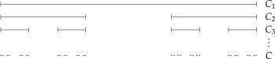
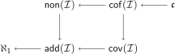
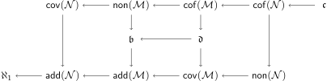
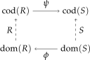
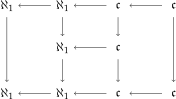
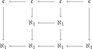

\( \newcommand{\set}[1]{\left\{\,#1\,\right\}} \newcommand{\N}{\mathbb N} \newcommand{\Q}{\mathbb Q} \newcommand{\R}{\mathbb R} \newcommand{\BB}{\mathbb B} \newcommand{\PP}{\mathbb P} \newcommand{\Null}{\mathcal N} \newcommand{\Meager}{\mathcal M} \newcommand{\Ksigma}{\mathcal K_\sigma} \newcommand{\forces}{\Vdash} \DeclareMathOperator{\dom}{dom} \DeclareMathOperator{\cod}{cod} \DeclareMathOperator{\rng}{rng} \DeclareMathOperator{\cl}{cl} \DeclareMathOperator{\rk}{rk} \DeclareMathOperator{\add}{\mathsf{add}} \DeclareMathOperator{\non}{\mathsf{non}} \DeclareMathOperator{\cov}{\mathsf{cov}} \DeclareMathOperator{\cof}{\mathsf{cof}} \DeclareMathOperator{\Diff}{Diff} \DeclareMathOperator{\Con}{Con} \DeclareMathOperator{\Fn}{Fn} \DeclareMathOperator{\Nonnull}{Nonnull} \)
These notes began when the author Samuel Coskey supervised Erik Holmes in an independent studen course at Boise State University. The subject was cardinal characteristics of the continuum. In his work for the course, Erik wrote a set of notes on the subject. Afterwards, while teaching a graduate course in set theory, Samuel adapted and extended Erik’s notes for use as lecture notes, resulting in the present document.
We would like to acknowledge the support of Boise State University, and the Math 522 students who have provided feedback: Rhett Barton, Kyle Beserra, Kayla Krakoff, Joshua Meier, Stephanie Potter, Max Sullivan, and Rustyn Yazdanpour.
This course is about set theory, and its use in the study of the real line. By way of motivation, consider the question of measuring the size of a given set of real numbers. The word “size” can mean many different things, depending on the context. To see what I mean, consider these three important examples.
In this course we will ask the natural question: How do these three kinds of size compare with one another? In answering this question, we will discover numerous relationships between measure and category, with the diagram of these relationships revealing an intricate structure.
Our investigation of measure and category will lead us to a number of statements that are independent of the axioms of set theory. Such statements cannot be proved true or false using the usual axioms of set theory. The most central example of such a statement is the continuum hypothesis (CH), which asserts that the set of all real numbers has cardinality equal to the first uncountable cardinal number. Cantor initially posed this problem in 1878. In 1940 Gödel showed the axioms of set theory can’t disprove CH, and in 1965 Cohen finally showed that the axioms of set theory can’t prove CH.
In his proof, Cohen developed a tool for building models of set theory called forcing. Far from being an isolated application, Cohen’s contemporaries developed forcind into a general tool for proving independence results. We will develop the machinery of forcing and give a number of such applications.
With the tool of forcing in hand, we will return to the notions of measure and category. We will find that there are numerous cardinal numbers surrounding the zero length sets and the meager sets whose values, like the size of the set of all real numbers, are independent of the axioms of set theory.
Since we will be working with real numbers, we should begin with a definition of the real number system. First we need some vocabulary surrounding fields.
It is not difficult to prove that any two complete ordered fields are isomorphic to each other, which means it makes sense for us to define the real number system as the unique such object.
Now this definition of the real number system is axiomatic—it tells you how real numbers behave, but it leaves it up to your imagination what a real number really is. In fact, we have some choice in this matter. One can construct real numbers using decimal strings, binary strings, or even Cauchy sequences. For our set-theoretic purposes, all that matters is that we give one construction of the real numbers that works.
We will give the construction of the real numbers using cuts, which was proposed by Dedekind in the 19th century. First, let’s take the construction of the rational number system for granted. It is simply the set of fractions whose numerator is an integer and whose denominator is a nonzero natural number.
Now observe that each real number \(r\) cuts the rational numbers into two pieces: the set of rational numbers that are strictly less than \(r\), and the set of rational numbers that are greater than or equal to \(r\). Conversely, if I cut the rational numbers into two pieces, there is a real number just in the middle of the cut (the supremum of the left piece).
This means that all we have to do to define real numbers is to define cuts. To avoid circularity, we should axiomatize cuts without referring to real numbers at all. A cut in the rational numbers is a subset \(C\subset \Q \) satisfying three properties:
To complete the construction one must say how the \(+,\times \) operations and \(<\) relation can be defined purely in terms of cuts, and then prove that they satisfy all the axioms of a complete ordered field. For example, one defines \(C+C'\) as follows: \[C+C'=\set {q+q'\in \Q \mid q\in C,q'\in C'} \] Similarly one defines \(C<C'\) if and only if \(C\subset C'\) and \(C\neq C'\). We omit the details verifying that these definitions work.
1.3. Remark. It is interesting to compare Dedekind’s construction with the modern decimal number construction. The decimal number construction is practical for calculations, but has some oddities. For example some numbers have two decimal representations, like \(.999\cdots \) and \(1.000\cdots \). Also we made an arbitrary decision to use decimal expansions over other bases. Dedekind’s construction is beautiful because it is uniform and doesn’t involve any arbitrary decisions.
When studying the foundations of numbers, one often starts with the natural numbers, uses differences to construct integers, then fractions to construct rational numbers, and finally constructs the real numbers as above. It may seem as if these steps are all similar to one another, but the final step is different. To see why we must introduce the idea of set size.
1.4. Definition. A set \(A\) of real numbers is said to be countable if its elements can be enumerated using natural number indices. In other words, \(A\) is countable if there exists a sequence \((a_n)_{n\in \N }\) such that \(A=\set {a_n\mid n\in \N }\).
Note that in this terminology, a finite set is officially countable. If we wish to emphasize that a particular countable set is infinite, we will use the term countably infinite. A set that is not countable is called uncountable.
The natural numbers, the integers, and the rational numbers are all countable using well-known argument. We now give Cantor’s famous proof of the fact that the set of all real numbers is uncountable. The argument goes by contradiction and uses a recursive construction to reach a contradiction one step at a time. Such arguments are often called “diagonal”, for reasons we shall see later on.
Proof. Suppose towards a contradiction that the set of all real numbers is countable. Then there exists a sequence \((a_n)_{n\in \N }\) such that \(\R =\set {a_n\mid n\in \N }\). Our strategy will be to inductively construct a decreasing sequence of closed intervals \(I_n=[l_n,r_r]\) such that for all \(n\), \(a_n\notin I_n\). Then if \(r\) lies in the intersection of these intervals, \(r\) cannot be equal to \(a_n\) for any \(n\), a contradiction.
The construction itself is straightforward. For the base case let \(I_1=[l_1,r_1]\) be any interval which omits \(a_1\). For the inductive step, if \(I_{n-1}\) has been defined, let \(I_n=[l_n,r_n]\) be any subinterval of \(I_{n-1}\) which omits \(a_n\).
We can now find a point in the intersection of the \(I_n\) using the completeness property. First observe that since \(I_n\subset I_{n-1}\) for all \(n\), the set of left endpoints \(\set {l_n\mid n\in \N }\) is bounded above by any and all of the right endpoints \(r_n\). By the completeness property, the set of left endpoints has a least upper bound \(x\). Since \(x\) is an upper bound for \(\set {l_n\mid n\in \N }\), we have \(l_n\leq x\) for all \(n\). Since \(x\) is the least possible upper bound for \(\set {l_n\mid n\in \N }\), we have \(x\leq r_n\) for all \(n\). Therefore we have \(x\in [l_n,r_n]=I_n\) for all \(n\).
Since \(x\) lies in \(I_n\) for all \(n\), and since we chose \(I_n\) in such a way that it omits \(a_n\), we know that \(x\neq a_n\) for all \(n\). This contradicts the hypothesis that \(\R =\set {a_n\mid n\in \N }\), and concludes the proof. □
This style argument appears in one form or another numerous times throughout elementary analysis and set theory. We shall next see it in the proof of the Baire category theorem.
Exercise 1.1. With the definition of \(C+C'\) we gave for Dedekind cuts, show that addition is commutative and associative.
Exercise 1.2. Define multiplication \(C\times C'\) for Dedekind cuts, and show that it agrees with multiplication for rational numbers. [Hint: consider four cases when \(C,C'\) are negative or nonnegative.]
Exercise 1.3. Let \(A\) be a set of real numbers, and assume \(A\) contains an interval of nonzero length. Show that \(A\) is uncountable.
Exercise 1.4. Show that any two complete ordered fields are isomorphic as ordered fields. [Hint: observe that both must contain a copy of \(\Q \) which is dense.]
Notes and further reading. Although the material in this section is standard and can be located in most any analysis book, an excellent introduction is Understanding Analysis by Stephen Abbott. For the completeness axiom see Abbott, Section 1.3. For Cantor’s theorem see Abbott, Section 1.4. For Dedekind cuts see Abbott, Section 8.4.
In the previous section we introduced the real numbers, and a cardinality-based notion of size (countable and uncountable). In this section we introduce a topological notion of size. Intuitively one might try to begin with denseness, but it doesn’t quite work. The reason is that some very small sets are dense (like the rationals) and some very large sets are not dense (like the half-line \([0,\infty )\)). Instead we need the following.
2.1. Definition. A set of real numbers \(A\) is said to be nowhere dense if every positive-length interval \(I\) contains a positive-length interval \(J\) such that \(J\) is disjoint from \(A\).
2.2. Example. Any finite subset of \(\R \) is nowhere dense. The set \(\set {1/n\mid n\in \N }\) is nowhere dense. In fact, any discrete set is nowhere dense (here, \(A\) is discrete if every point of \(A\) is isolated). The set of rational numbers whose numerator is \(1\) and whose denominator is a power of \(2\) is not nowhere dense, because such a number can be found in every positive-length subinterval of \([0,1]\).
Note that nowhere dense sets need not be countable. The classical Cantor middle thirds set is an archetypal example of a nowhere dense set. Recall that the Cantor set is defined as follows. Begin with the set \(C_1=[0,1]\). Let \(C_2=[0,1/3]\cup [2/3,1]\) be the set \(C_1\) with its open middle third removed. Let \(C_3=[1,1/9]\cup [2/9,1/3]\cup [2/3,7/9]\cup [8/9,1]\) be the set \(C_2\) with the open middle third removed from each component of \(C_2\). Refer to Figure 2.f1 for a picture of these first few sets. Recursively, let \(C_{n+1}\) be constructed from \(C_n\) by removing the open middle third from each component of \(C_n\). Finally the Cantor set \(C\) is defined to be \(C=\bigcap C_n\). We will see in a later section that the Cantor set is uncountable.

Proof. Let \(I\) be a given positive-length interval. Observe that for each \(n\), the set \(C_n\) consists of intervals of length \(1/3^n\) which are all at least \(1/3^{n-1}\) units apart from one another. Since \(1/3^n\to 0\), we can find some value \(N\) such that \(C_N\) consists of intervals that are strictly shorter than the length of \(I\). It follows that \(I\cap (C_N)^c\) contains a positive-length interval \(J\), as desired. □
The terminology “nowhere dense” may sound strange at first, but it is justified by the following fact.
2.4. Proposition. Let \(A\) be a set of real numbers. The following are equivalent.
The proof is requested in Exercise 2.2.
2.5. Theorem. The collection of nowhere dense sets is closed under the operations of subset, union, and closure.
Proof. Preservation to subsets is immediate from the definition.
For preservation to unions, suppose that \(A,B\) are nowhere dense and let \(I\) be a positive-length interval. Since \(A\) is nowhere dense, there is a positive-length interval \(J\subset I\smallsetminus A\). Since \(B\) is nowhere dense there is a further positive-length interval \(J'\subset J\smallsetminus B\). It follows that \[J'\subset (I\smallsetminus A)\smallsetminus B=I\smallsetminus (A\cup B) \] This establishes that \(A\cup B\) is again nowhere dense.
Preservation to closures is immediate from condition (b) of Proposition 2.4, but we can also give a direct argument. Let \(A\) be nowhere dense and let \(I\) be a given positive-length interval. Since \(A\) is nowhere dense there is a positive-length interval \(J\) such that \(J\subset \R \smallsetminus A\). Removing endpoints if necessary, we may suppose that \(J\) is open. It follows that \(J\subset \R \smallsetminus \cl (A)\) (recall that since \(\cl (A)\) is the intersection of all closed sets containing \(A\), we have that \(\R \smallsetminus \cl (A)\) is the union of all open sets disjoint from \(A\)). This shows that \(\cl (A)\) is nowhere dense. □
It is easy to see that the collection of nowhere dense sets is not preserved to infinite unions, even countably infinite ones. For example, the set of rational numbers is countable, and therefore it is a countable unions of singletons: \(\Q =\bigcup _{q\in \Q }\{q\}\). Each singleton \(\{q\}\) is clearly nowhere dense, so \(\Q \) is a countable union of nowhere dense sets, but \(\Q \) is dense.
2.6. Definition. A set of real numbers \(A\) is called meager if it is a union of countably many nowhere dense sets. A set \(A\) is called comeager if \(\R \smallsetminus A\) is meager.
At this point it is still conceivable that the concept of meagerness is completely trivial—maybe every set of real numbers turns out meager according to this definition. The Baire category theorem says that this is not the case. In fact, we will soon see that meager sets really are “small”, as the name implies.
2.7. Theorem (Baire category theorem). The set of all real numbers \(\R \) is nonmeager. In fact, if \(I\) is a positive-length interval then \(I\) is nonmeager.
Proof. The proof is very similar to Cantor’s proof of Theorem 1.5. Let \(I\) be a positive-length interval and suppose towards a contradiction that \(I\) is meager. Then there exists a sequence \((A_n)_{n\in \N }\) of nowhere dense sets such that \(\bigcup A_n=I\). We will inductively construct a decreasing sequence of closed subintervals \(J_n\subset I\) such that for all \(n\), \(J_n\cap A_n=\emptyset \).
The induction is again straightforward. First apply the definition of \(A_1\) being nowhere dense to obtain \(J_1\). Inductively apply the definition of \(A_n\) being nowhere dense to \(J_n\) to obtain \(J_{n+1}\). (Each time we may shrink the newly obtained interval slightly to suppose that it is closed.)
We can now argue just as in the proof of Theorem 1.5 that there exists a point \(x\in \bigcap J_n\). It follows that \(x\notin \bigcup A_n\), which contradicts the assumption that \(I=\bigcup A_n\), and completes the proof. □
Baire category theory gets its name from the above theorem, and the fact that meager sets used to be called “first category”. Nonmeager sets used to be called “second category”.
2.8. Theorem. The class of meager sets is closed under the operations of subset and countable union.
We remark that the meager property is not necessarily preserved to the closure. For example the closure of \(\Q \) is \(\R \). In fact \(\cl (A)\) is meager if and only if \(A\) is nowhere dense.
As a consequence of the Baire category theorem, for any set \(A\) it is possible to assign \(A\) one of three distinct “sizes”:
We should verify that no set of numbers can be both meager and comeager. Indeed, suppose that both \(A\) and \(\R \smallsetminus A\) were meager. Then by Theorem 2.8 their union \(\R \) would be meager, contradicting the Baire category theorem.
We should also verify that there exists sets of numbers that are neither meager nor comeager. Indeed, if \(I\) is any bounded positive-length interval then by the Baire category theorem \(I\) is nonmeager, and since \(\R \smallsetminus I\) also contains a bounded interval, \(I\) is also non-comeager.
Exercise 2.1. Compute the sum of the lengths of all of the intervals removed from \([0,1]\) in the construction of the Cantor set. What if some fraction other than \(1/3\) is removed at each stage?
Exercise 2.2. Prove Proposition 2.4.
Exercise 2.3. We have observed that unlike the nowhere dense property, the meager property is not necessarily preserved to the closure. Prove that if \(\cl (A)\) is meager, then \(A\) was nowhere dense to begin with.
Notes and further reading. For more on the Cantor set see Abbott, Section 3.1. For the Baire category theorem see Abbott, Section 3.5. For Baire category theory generally see Oxtoby, Chapter 1.
Classical measure theory aims to try to extend the length function on intervals to be defined on more complicated sets. For example, if a given set is a finite or even countable union of intervals, then it is appropriate to take the sum of the lengths of the components. But what about more complex sets like the Cantor set? This was known as the measure problem: to construct a measurement function \(m\), defined on sets of real numbers and valued in \([0,\infty ]\), satisfying:
Perhaps surprisingly, the conditions (a)–(c) are mutually contradictory and so no such measurement function \(m\) exists! Here is Vitali’s clever example of a contradiction arising from these requirements. Regard \(\Q \) as an additive subgroup of \(\R \) and consider the cosets of \(\Q \), that is, sets of the form \(x+\Q \). Let \(A\subset [0,1]\) be a set of coset representatives, that is, \(A\) contains exactly one element from each of the cosets. (It is always possible to choose a coset representative in \([0,1]\) because \(\Q \) is dense.)
Then the translations \(q+A\) for \(q\in \Q \) form a countable sequence of pairwise disjoint sets that cover all of \(\R \). In fact, if we let \(S=\Q \cap [-1,1]\) then the translations \(q+A\) for \(q\in S\) already cover all of \([0,1]\). We can then infer from (a) and (c) that \(m[\bigcup _{q\in S}(q+A)]\) lies between \(1\) and \(3\). But on the other hand, by (b) and (c) we have that \[m\left (\bigcup _{q\in S}(q+A)\right )=\sum _{q\in S}m(q+A)=\sum _{q\in S}m(A) \] This is a contradiction because an infinite sum of a single constant value \(m(A)\) must equal either \(0\) or \(\infty \), and so cannot lie between \(1\) and \(3\).
3.1. Remark. We observe that the axiom of choice was explicitly used in Vitali’s construction of the set \(A\) above. In fact, it is known that the use of the axiom of choice is necessary to build a nonmeasurable set.
The contradiction described above is typically resolved not by dropping one of the conditions (a)–(c), but rather by dropping the requirement that \(m\) is defined on all sets of real numbers. The justification for this decision is that sets like the \(A\) constructed above should be regarded as pathological, and we don’t usually need to measure them in applications.
Let us naïvely begin to construct a measure \(m\) that is at least defined on reasonable sets. First, condition (a) implies we should let \(m(I)=\ell (I)\) for any interval \(I\). Next, if \(A=\bigcup I_n\) is a union of disjoint intervals \(I_n\), then condition (c) implies we should let \(m(A)=\sum \ell (I_n)\). Third, if \(A=\bigcap A_n\) is an intersection of sets where \(m\) is defined and finite, then it is natural to define \(m(A)=\inf m(A_n)\). We now observe that all three of the above simple cases fit into the rule given by the following key formula: \begin {equation} \label {eq:measure} m(A)=\inf \set {\sum \ell (I_n)\mid \text {$I_n$ are intervals and }A\subset \bigcup I_n} \end {equation} The next result states that this rule for defining \(m\) actually works for all sets that are reasonably constructible. Recall that a Borel set is one that can be constructed by beginning with the intervals and then executing countably many countable unions or intersections.
3.2. Theorem (Carathéodory’s extension theorem). The measure \(m\) defined in Equation \(\eqref {eq:measure}\) satisfies conditions (a) and (b), and additionally satisfies condition (c) when applied to Borel sets.
Proof of conditions (a) and (b) only. For condition (a), let \(I\) be an interval. It is clear that \(m(I)\leq \ell (I)\), since \(I\) itself is an interval covering \(I\). For the other direction, we will show that \(I\subset \bigcup I_n\) implies \(\sum \ell (I_n)\geq \ell (I)\). Then taking the infemum over all such coverings this allows us to conclude that \(m(I)\geq \ell (I)\).
Let us first handle the case when \(I=[a,b]\) is closed and bounded, and all of the \(I_n\) are open intervals \((a_n,b_n)\). Then since \(I\) is compact, \(I\) is covered by just finitely many of the \(I_n\), without loss of generality we may assume they are indexed \(I_0,\ldots ,I_N\). Now after further renaming or removing intervals from the list, we may suppose that \(I_0\) covers the left endpoint of \(I\), each \(I_{n+1}\) covers the right endpoint of \(I_n\), and \(I_N\) covers the right endpoint of \(I\). We can now compute that \[\sum \ell (I_n) \geq \sum _0^N(b_n-a_n) \geq \sum _1^N(b_n-b_{n-1})-a \geq b-a = \ell (I)\text {.} \]
If \(I\) is not necessarily closed and the \(I_n\) are not necessarily open, then we look instead at \(I'=\cl (I)\) and \(I_n'=(I_n)^\circ \). Then the \(I_n'\) cover all but a countable subset of \(I'\), so for any \(\epsilon \) we can find additional open intervals \(J_n\) with \(\ell (J_n)\leq \epsilon /2^n\) covering these missing points. Now the previous argument shows that \(\sum \ell (I_n)+\sum \ell (J_n)\geq \ell (I)\). Using the geometric series formula we obtain \(\sum \ell (I_n)+\epsilon \geq \ell (I)\). Letting \(\epsilon \to 0\) we have the desired result.
Finally if \(I\) is not bounded, we let \(A_k\) be a sequence of bounded subintervals of \(I\) such that \(\ell (A_k)\to \infty \). The above result implies that \(\sum \ell (I_n)\geq \ell (A_k)\), and letting \(k\to \infty \) we once again achieve the desired result. This concludes the proof of condition (a).
Condition (b) follows directly from the fact that the length function \(\ell \) is translation invariant, and the definition of \(m\) depends only on \(\ell \).
For the proof that \(m\) satisfies condition (c), we refer the reader to any standard measure theory text. □
From now on we will ignore the full power of measure theory to assign a real number measure to any Borel set, and focus only on the specific value zero. Sets whose measure is zero are called null sets, and for convenience we extract the definition of null set from the above definition of arbitrary measure.
3.3. Definition. A set of real numbers \(A\) is null if for all \(\epsilon >0\) there exists a sequence of intervals \((I_n)_{n\in \N }\) such that \(A\subset \bigcup I_n\) and \(\sum \ell (I_n)<\epsilon \).
3.4. Example. The Cantor set \(C\) is null. Indeed, we have already computed that the sum of the lengths of all intervals removed from \([0,1]\) in the construction of \(C\) is equal to \(1\). Since \([0,1]\) has measure \(1\), it follows from additivity that \(C\) must have measure \(0\).
The notion of null set bears many similarities with the notion of meager set. As was the case with meager sets, the notion of a null set allows us to assign to any given set \(A\) one of three simple “sizes”: null, conull, or nonnull and non-conull. Moreover, null sets satisfy an analog of the Baire category theorem and the preservation properties of meager sets.
3.5. Corollary. The set \(\R \) of all real numbers is not null. In fact, if \(I\) is any positive-length interval then \(I\) is not null.
3.6. Corollary. The class of null sets is closed under the operations of subset and countable union.
Corollary 3.5 is immediate from condition (a) of Theorem 3.2. Corollary 3.6 is immediate from condition (c) of Theorem 3.2.
Exercise 3.1. Prove that the properties (a)–(c) of a measure imply monotonicity: if \(A\subset B\) then \(m(A)\leq m(B)\).
Exercise 3.2. Prove that the properties (a)–(c) of a measure imply continuity from below: if \(A_n\) is an increasing sequence of sets and \(A=\bigcap A_n\), then \(m(A)=\sup m(A_n)\). Then prove continuity from above: if \(A_n\) is a decreasing sequence of sets, \(m(A_n)\) is finite, and \(A=\bigcap A_n\), then \(m(A)=\inf m(A_n)\).
Exercise 3.3. Give a proof directly from Definition 3.3 that the Cantor set is null.
Exercise 3.4. Give a proof directly from Definition 3.3 that the class of null sets is closed under countable union.
Notes and further reading. Our presentation of Vitali’s construction follows Folland, Section 1.1. Our proof of Theorem 3.2, part (a) follows Oxtoby, Chapter 1. For a proof of part (c), see Folland, Section 1.4.
So far we have seen sets that are finite, countable, and uncountable. If a set \(A\) is finite, then there is a natural number that corresponds to the number of elements of \(A\). If \(A\) is countable, we understand that it has exactly as many elements as there are natural numbers. But if \(A\) is uncountable, is that all that needs be said or is there some kind of number that tells us just how uncountable it is?
In this section we discuss the notion of “cardinality” of a set \(A\), which replaces the notion of “number of elements” in the case when \(A\) is infinite. Notationally, we write \(|A|\) for the cardinality of \(A\). When \(A\) is finite, \(|A|\) will be a natural number. When \(A\) is countable, \(|A|\) will be the value \(\aleph _0\) (pronounced aleph zero, or aleph nought). And when \(A\) is uncountable \(|A|\) will be one of the values \(\aleph _1,\aleph _2\), etc.
We will now begin to describe several key properties of cardinality. Surprisingly, we can do this without actually defining what the \(\aleph \)’s are! The following definition of how \(|\cdot |\) behaves is sufficient for many practical purposes. In the next section we will give a formal definition of the \(\aleph \)’s.
4.1. Definition. Let \(A\) and \(B\) be sets.
With this definition in hand, we can now confirm that there are many different uncountable cardinalities. Recall that if \(A\) is a set, then the power set of \(A\), denoted \(\mathcal P(A)\), is the set of all subsets of \(A\).
Proof. It is clear that \(|A|\leq |\mathcal P(A)|\), since the map \(i(a)=\{a\}\) is an injection from \(A\) into \(\mathcal P(A)\).
To see that there is no bijection between \(A\) and \(\mathcal P(A)\), let \(f\colon A\to \mathcal P(A)\) be any function. Then build the set \(D\) of all elements \(a\in A\) such that \(a\notin f(a)\). We claim that \(D\) is not in the range of \(f\), and therefore that \(f\) is not a bijection.
To see this, suppose towards a contradiction that there exists \(a_0\in A\) such that \(D=f(a_0)\). Then by the definition of \(D\), we have that \(a_0\in D\) iff \(a_0\notin f(a_0)\). And since \(D=f(a_0)\) we can write this as \(a_0\in D\) iff \(a_0\notin D\), which is a clear contradiction. □
THis classical argument is often called a “diagonal argument” because of the key formula in the proof: \(a\notin f(a)\). To picture it, suppose you graph the \(A^2\) plane, and shade the set of pairs \((x,y)\in A^2\) such that that \(x\in f(y)\). Then the set \(D\) is constructed by taking the unshaded elements of the diagonal of the \(A^2\) plane.
4.3. Definition. Let \(A\) be a set (or class).
4.4. Remark. The property of being a well-ordering may seem obscure at first, but finding a least element is precisely what is needed in induction arguments. It is what allows us to say “…otherwise, let \(x\) be the least counterexample”.
In the next few results, we essentially show that the ordering \(\leq \) on the cardinals is a well-ordering. Note that reflexivity holds because the identity function is an injection from \(A\) into itself, and transitivity holds because the composition of two injections is an injection. The following result establishes antisymmetry.
4.5. Theorem (Cantor–Schröder–Bernstein). If \(|A|\leq |B|\) and \(|B|\leq |A|\) then \(|A|=|B|\). In other words, if there exist injections \(i\colon A\to B\) and \(j\colon B\to A\) then there is a bijection \(f\colon A\to B\).
Proof. Replacing \(B\) with \(j(B)\), we may suppose that that \(B\subset A\). Then we have \[A\supset B\supset i(A)\supset i(B)\supset i^2(A)\supset \cdots \] Now \(A\) can be written as the union of the successive differences of these sets, together with the intersection of them all: \[A=(A\mathord {\smallsetminus }B)\cup (B\mathord {\smallsetminus }i(A)) \cup (i(A)\mathord {\smallsetminus }i(B))\cup \cdots \cup \bigcap i^n(A) \] Meanwhile, \(i\) provides bijections \[A\mathord {\smallsetminus }B\leftrightarrow i(A)\mathord {\smallsetminus }i(B)\leftrightarrow i^2(A)\mathord {\smallsetminus }i^2(B)\leftrightarrow \cdots \] It follows that the map \[f(a)=\begin {cases}i(a)&\text {if }a\in (A\mathord {\smallsetminus }B)\cup (i(A)\mathord {\smallsetminus }i(B))\cup (i^2(A)\mathord {\smallsetminus }i^2(B))\cup \cdots \\ a&\text {otherwise} \end {cases} \] is a bijection from \(A\) to \(B\). □
This result also gives a simple recipe for checking whether two sets have the same cardinality. For instance to show \([0,1]\) and \((0,1)\) have the same cardinality, it is much easier to construct two injections than a single bijection!
The next result shows that the cardinalities are totally ordered. In the proof we will need Zorn’s lemma: If \(P\) is a partially ordered set such that every totally ordered subset has an upper bound, then \(P\) has at least one maximal element. Zorn’s lemma is used perennially in analysis, and it is a consequence of the axiom of choice.
4.6. Theorem. If \(A,B\) are sets then either \(|A|\leq |B|\) or \(|B|\leq |A|\). That is, there exist injective functions \(A\to B\) and \(B\to A\).
Proof. Consider the family \(\mathcal F\) of all injective functions whose domain is a subset of \(A\) and whose range is a subset of \(B\). Then \(\mathcal F\) is partially ordered by extension of functions, and it is easy to check that this ordering satisfies the hypothesis of Zorn’s lemma. Thus there is a maximal element \(f\), and since it is maximal either the domain of \(f\) is all of \(A\) or the range of \(f\) is all of \(B\). In the first case \(f\) is an injection from \(A\) to \(B\), and in the second case \(f^{-1}\) is an injection from \(B\) to \(A\). □
Finally we show that \(\leq \) is a well-ordering on cardinals. One technicality arises here that did not in the last four properties. To check that the cardinals are well-ordered, we should check that any collection of sets has a minimal element, and that collection need not itself be a set. (Remember: the set of all sets isn’t a set!)
4.7. Theorem. Let \(\mathcal A\) be a class of sets. Then there exists a \(\leq \)-minimal element \(A\in \mathcal A\), that is, \(A\) injects into any \(B\in \mathcal A\).
Proof. We argue very similarly to Theorem 4.6, but in order to apply Zorn’s lemma we must first suppose that \(\mathcal A\) really is a set. Fix any element \(A\in \mathcal A\) and let \[\mathcal F=\set {(f_B)_{B\in \mathcal A}\mid \text {there is $A_0\subset A$ such that for all $B$, $f_B$ is an injection from $A_0$ to $B$}} \] This time \(\mathcal F\) is partially ordered by coordinatewise extension of functions. By Zorn’s lemma there is a maximal element \((f_B)_{B\in \mathcal A}\), and since it is maximal either the domain \(A_0\) is all of \(A\) or the range of one of the functions \(f_B\) is all of \(B\). In the first case \(f_B\) is an injection from \(A\) to \(B\) for all \(B\). In the second case, fix \(B\) such that \(f_B(A_0)=B\). Then for any \(C\in \mathcal A\), the composition \(f_C\circ f_B^{-1}\) is an injection from \(B\) to \(C\), so \(B\) is as desired.
In the general case when \(\mathcal A\) is a class, we can reduce to the set case as follows. Fix an element \(D\in \mathcal A\) and let \(\mathcal A'\) denote the collection of subsets of \(D\) that are in bijection with some element of \(\mathcal A\). Since \(\mathcal A'\) is a set, we can find \(A\in \mathcal A\) which injects into all elements of \(\mathcal A'\). It follows that \(A\) injects into all other elements of \(\mathcal A\) too. Indeed if \(B\in \mathcal A\) and \(A\) does not inject into \(B\), then by Theorem 4.6, \(B\) injects into \(A\). It follows that \(B\) is in bijection with a subset of \(D\) and hence \(A\) injects into \(B\) after all. □
Although we still can’t be fully rigorous about the meaning of the symbols \(\aleph _1,\aleph _2,\ldots \), the well-ordering property helps justify the use of these symbols. Essentially \(\aleph _1\) is the least cardinality greater than \(\aleph _0\), \(\aleph _2\) is the least cardinality greater than \(\aleph _1\), and so forth. In the next section, we will make this fully precise.
Exercise 4.1. Show that the following sets are all in bijection with one another: \(\R \), \([0,1]\), \((0,1)\), \((0,\infty )\), \(\mathcal P(\N )\), and \(\{A\subset \N \mid A\text {is infinite}\}\).
Exercise 4.2. Which of the following categories satisfy the analog of the Cantor–Schröder–Bernstein theorem? (That is, monomorphisms \(A\to B\to A\) implies isomorphism \(A\cong B\).) linear orders with order-preserving maps; groups with group homomorphisms; topological spaces with continuous maps; topological spaces with piecewise continuous maps.
Exercise 4.3. We used the well-ordering principle together with Cantor’s theorem to argue that there are uncountable ordinals. Here is another way: show that the set of isomorphism equivalence classes of well-orderings of \(\omega \) is itself naturally well-ordered, and that this well-ordering is uncountable.
Notes and further reading. Our proof of Theorem 4.7 follows and extends the proof given in Chaim Samuel Hönig, Proof of the well-ordering of cardinal numbers. For a more detailed proof of Theorem 4.5, see Kunen (Foundations), Section I.10.
In the previous section we defined cardinal equality \(|A|=|B|\) and studied the order structure \(\leq \) of the cardinal equality equivalence classes. In this section we finally define \(|A|\) by choosing a single representative of \(A\)’s equivalence class. Specifically, we will define \(|A|\) to be the least ordinal number in \(A\)’s equivalence class.
Ordinal numbers play a central role in set theory, including both cardinality theory and forcing. While cardinal numbers are needed to measure the size of an infinite set, ordinal numbers are needed to measure the length of an infinite well-ordered set. The ordinals can be used to extend the notion of counting into the infinite, and thus are an excellent choice to help us define the cardinal numbers or \(\aleph \)’s.
The initial goal in defining the ordinals is to provide a collection of well-ordered sets such that for any given well-ordered set \(A\) there is one and only one ordinal \(\alpha \) such that \(A\) is isomorphic to \(\alpha \). For finite well-ordered sets, we can write such a definition explicitly: \begin {align*} 0&=\emptyset \\ 1&=\{0\}\\ 2&=\{0,1\}\\ \vdots \\ n+1&=\{0,\ldots ,n\} \end {align*}
This construction can be summed up in one recurrence: \(n+1=n\cup \{n\}\). The first infinite ordinal, called \(\omega \) or \(\omega _0\), is simply the union of all the finite ordinals. The process can then continue; the successor of \(\omega \) is the ordinal \(\omega +1=\omega \cup \{\omega \}\).
Intuitively, infinite ordinals are all constructed in this fashion. If \(\alpha \) is any ordinal then its successor is \(\alpha +1=\alpha \cup \{\alpha \}\), and after infinitely many such steps we take a union. Unfortunately this prescription is not rigorous because it is circular; we cannot make a definition like \(\alpha =\bigcup _{\beta <\alpha }\beta \). Instead we have the following more technical characterization.
5.1. Definition. A set \(\alpha \) is an ordinal if it satisfies the properties:
5.2. Remark. The first condition ensures that the ordinals are in fact well-ordered; the order relation \(\in \) is simply the most convenient one available in set theory. The second condition ensures that the ordinals have no “gaps”; for instance the set \(\{0,1,3,5,9\}\) is well-ordered but not an ordinal.
The following fundamental facts about ordinals together imply that Definition 5.1 achieves our initial goals in defining the ordinals.
An ordinal \(\alpha \) is said to be successor ordinal if it is of the form \(\beta +1\) for some ordinal \(\beta \). Otherwise \(\alpha \) is said to be limit ordinal. The following result confirms that our initial intuitive construction of the ordinals, though it involved circular reasoning, was nonetheless correct in hindsight.
5.4. Proposition. If \(\alpha =\beta +1\) then \(\alpha \) is the least ordinal greater than \(\beta \). If \(\alpha \) is a limit ordinal then \(\alpha \) is the union of the ordinals that came before it.
Proof. It is easy to check \(\alpha =\beta \cup \{\beta \}\) is indeed an ordinal (it is transitive and well-ordered by \(\in \)). Since the ordinals are well-ordered we may let \(\alpha '\) be the least ordinal greater than \(\beta \); we want to show that \(\alpha =\alpha '\). If this were not the case, then by totality we would either have \(\alpha '\in \alpha \) or \(\alpha \in \alpha '\). In the first case either \(\alpha =\beta \) or \(\alpha \in \beta \), which contradicts that \(\alpha '\) is greater than \(\beta \). The second case contradicts that \(\alpha '\) is the least such.
Next let \(\alpha \) be a limit ordinal, and let \(\alpha '\) be the union of all \(\beta \in \alpha \). Since \(\alpha \) is transitive we easily have that \(\alpha '\subset \alpha \). On the other hand if \(\gamma \in \alpha \) then by the previous paragraph \(\gamma +1\leq \alpha \) and since \(\alpha \) is limit we must have \(\gamma +1\in \alpha \). Thus \(\gamma \in \gamma +1\in \alpha \) and it follows that \(\gamma \in \alpha '\). □
As we have hinted, although ordinals naturally measure the length of well-orderings, they can also be used to measure size \(|A|\). Recall that the axiom of choice implies the well-ordering principle, which states that any set \(A\) admits a well-ordering \(\leq \). Combining this with Theorem 5.3, it follows that any set \(A\) is in bijection with at least one ordinal. Different well-orderings of \(A\) can lead to different ordinals, so we make the following definition.
5.5. Definition. If \(A\) is any set, then \(|A|\) is the least ordinal \(\alpha \) such that \(A\) is in bijection with \(\alpha \).
Thus a cardinal is a special type of ordinal. Most ordinals will not be cardinals, since for instance if \(A\) is in bijection with \(\omega +7\) then clearly it is also in bijection with \(\omega \). We give \(\aleph \) names to the ordinals which are cardinals: The first infinite cardinal is \(\aleph _0\), the first uncountable cardinal is \(\aleph _1\), the next least cardinal is \(\aleph _2\), and so forth.
The pattern continues transfinitely as well, with \(\aleph _\alpha \) defined for every ordinal \(\alpha \). Officially, these higher cardinals are defined using transfinite recursion. Just as natural numbers are used to index traditional recursion, ordinals are used to index transfinite recursion. While ordinary recursion requires a special “base” case at \(n=0\), transfinite recursion requires a “limit” case at each limit ordinal.
5.6. Definition. The first infinite cardinal is \(\aleph _0=\omega \). If \(\aleph _\alpha \) is defined then \(\aleph _{\alpha +1}\) is the least ordinal that is not in bijection with \(\aleph _\alpha \). If \(\lambda \) is a limit ordinal and \(\aleph _\alpha \) has been defined for \(\alpha <\lambda \), then \(\aleph _\lambda =\bigcup _{\alpha <\lambda }\aleph _\alpha \).
Recall that Cantor proved \(|\R |\) is uncountable. Now that we have names for the uncountable cardinals, it is interesting to ask which one \(|\R |\) is equal to. Is it \(\aleph _1\)? Or \(\aleph _{17}\)? The method of forcing, discussed in Part III, was invented to answer questions like this one.
Exercise 5.1. Show that if \(\kappa \) is an infinite cardinal, then \(\kappa \) is a limit ordinal.
Exercise 5.3. If \(A\) is an infinite set, show that \(|A|\) is equal to \(\aleph _\alpha \) for some \(\alpha \).
Notes and further reading. This material on ordinals and cardinals can be found in any introductory set theory textbook. For ordinals, see for instance Section 1.7 of Devlin’s The joy of sets. For cardinals, see Section 3.6 of the same text.
If \(A\) is a countable set then \(A^\omega \) denotes the space of all sequences with values in \(A\), that is, functions from \(\omega \) to \(A\). We can endow \(A^\omega \) with a topology by regarding \(A\) as discrete, \(A^\omega \) as a product of countably many copies of \(A\), and using the product topology. The official definition of the product topology on \(A^B\) states a basis consists of sets of the form \[\set {x\in A^B\mid x(b_0)\in A_0,\ldots ,x(b_{n-1})\in A_{n-1}} \] where \(b_i\in B\) are distinct and \(A_i\subset A\) are open. In the case of \(A^\omega \) we can make two simplifications: since \(\omega \) is countable we can replace \(i_0,\ldots i_{n-1}\) with \(0,\ldots ,n-1\), and since \(A\) is discrete we can assume the \(A_i\) are singletons. Putting this all together, \(A^\omega \) has a basis consisting of all \[V_s=\set {x\in A^\omega \mid s\subset x} \] where \(s\) is an element of \(A^n\) for some \(n\).
The two most important examples of sequence spaces are the Cantor space \(2^\omega \) and the Baire space \(\omega ^\omega \).
6.1. Proposition. The Cantor space is homeomorphic to the Cantor middle thirds set. The Baire space is homeomorphic to the set of irrational real numbers.
Proof. We give the proof in the case of the Cantor space, and a brief hint in the case of the Baire space.
The Cantor middle thirds set \(C\) has a natural description in terms of ternary expansions. If \(a\in [0,1]\) then \(a\) lies in the Cantor set if and only if it has a ternary expansion that does not contain the digit \(1\). Thus there is a simple bijection \(2^\omega \to C\) given by replacing the \(1\)’s in \(x\) with \(2\)’s: \[f(x)=0.(2x(0))(2x(1))(2x(2))\cdots \] The map is continuous: if \(f(x)\in (a,b)\) then there exists \(n\) such that if we round \(f(x)\) down at its \(n\)th digit then it is still \(>a\) and if we round it up at its \(n\)th digit then it is still \(<b\). It follows that if \(s=x\restriction n\), then we have \(f(V_s)>a\). Finally recall that a continuous bijection between compact spaces is always a homeomorphism.
For the Baire space, it is common to use the values of \(x\in (\omega \smallsetminus \{0\})^\omega \) as the entries in a continued fraction: \[f(x)=x(0)+\cfrac {1}{x(1)+\cfrac {1}{x(2)+\cdots }} \] With some elementary number theory, it is possible to verify that this map is a bijection onto the set of irrational numbers, and even a homeomorphism. □
This result also implies that \(2^\omega \) admits a complete metric, because the Cantor set is a closed and hence complete subspace of \(\R \). In fact, any sequence space \(A^\omega \) is completely metrizable. For an example of a complete metric, given \(x,y\in A^\omega \) such that \(x\neq y\), let \(n\) be the least natural number such that \(x(n)\neq y(n)\) and set \(d(x,y)=1/n\).
Proof. Let \(x_i\) be a Cauchy sequence in \(A^\omega \). We can inductively construct an increasing sequence of indices \(i_0,i_1,\ldots \) such that for all \(n\) and \(i\geq i_n\) we have \(d(x_{i_n},x_i)<1/n\). In other words for \(i\geq i_0\) the \(x_i(0)\) all agree, for \(i\geq i_1\) the \(x_i(1)\) all agree, etc. Thus we may define an element \(x\) by letting \(x(n)=\) this agreed upon value. Now it is easy to check that \(x_i\to x\). □
It is not difficult to check this metric on \(A^\omega \) gives the same topology as the product topology described above. While this metric was fairly natural, it is not canonical. For example, any reordering of \(\omega \) would give rise to a different metric compatible with the toplogy.
We now discuss a variety of topological properties in the context of sequence space. The closed sets, nowhere dense sets, and compact sets all have special descriptions in sequence space (compact sets are discussed in the next section).
To begin, let \(A^{<\omega }=\bigcup A^n\) denote the set of finite sequences of elements of \(A\). This set is partially ordered by the subset relation, but we employ special terminology in this case. If \(s\subset t\) we say that \(s\) is an initial segment of \(t\) or alternatively that \(t\) is an extension of \(s\). We use the same terminology if \(s\in A^{<\omega }\), \(x\in A^\omega \), and \(s\subset x\): \(s\) is a finite initial segment of \(x\), or \(x\) is an infinite extension of \(s\).
A subset \(T\subset A^{<\omega }\) is said to be a tree if it is closed under initial segments. An element \(x\in A^\omega \) is said to be a branch through \(T\) if all of its finite initial segments \(x\restriction n\) lie in \(T\). We denote by \([T]\) the subset of \(A^\omega \) consisting of all branches through \(T\).
6.3. Proposition. A subset \(C\subset A^\omega \) is closed if and only if there exists a tree \(T\subset A^{<\omega }\) such that \(C=[T]\).
Proof. Conversely given any set \(B\subset A^\omega \), we let \(T_B\) be the tree consisting of all \(s\) such that \(V_s\cap B\neq \emptyset \) (that is, all initial segments of elements of \(B\)). We will show that the set \([T_B]\) of all branches through the tree \(T_B\) is precisely the closure of \(B\), which implies the desired result. For this, note that \(x\) lies in the closure of \(B\) if and only if every open neighborhood of of \(x\) meets \(B\). This is equivalent to the statement that for every initial segment \(s\subset x\), \(V_s\cap B\neq \emptyset \). Finally, this is equivalent to the statement that \(x\) is a branch through \(T_B\). □
In previous sections we have defined nowhere dense subsets of \(\R \) in terms of intervals. In fact we can define nowhere dense subsets of any topological space in terms of open sets: \(S\subset X\) is nowhere dense in \(X\) if every open set has an open subset disjoint from \(S\). This definition can even be made with basic open sets in place of open sets. Thus we have the following characterization.
6.4. Proposition. \(S\subset A^\omega \) is nowhere dense if and only if for every \(s\in A^{<\omega }\) there exists \(t\) such that \(s\subset t\) and \(V_t\) is disjoint from \(S\).
Meager sets are now defined in the same way as before: \(X\subset A^{<\omega }\) is meager if it is the union of countably many nowhere dense sets. Our proof of the Baire category theorem for the real numbers naturally extends to arbitrary complete metric spaces.
6.5. Theorem (Baire category theorem). If \(X\) is a complete metric space then \(X\) is not meager. Moreover if \(O\) is a nonempty open subset of \(X\) then \(O\) is not meager.□
In particular in Cantor space and Baire space we can divide the subsets into three sizes, meager, comeager, and neither. The proof of this general Baire category theorem is nearly identical to the proof of Theorem 2.7 with closed intervals replaced by closures of basic open sets \(\overline {O_n}\). The completeness of \(X\) is used to verify there is a point \(x\in \bigcap \overline {O_n}\).
Exercise 6.1. Check that the metric on \(A^\omega \) defined by \(d(x,y)=1/{n+1}\), where \(n\) is least such that \(x(n)=y(n)\), gives rise to the same topology as the product topology with basis consisting of all \(V_s\).
Exercise 6.3. Show that the sequence space \(A^\omega \) is homeomorphic to the cartesian product with itself \(A^\omega \times A^\omega \).
Notes and further reading. For introductory material on the combinatorics and topology of sequence space, see Kechris, Sections 2A and 2B. For another proof that the Baire space is homeomorphic to the irrationals, see Section 1 of Miller, Descriptive set theory and forcing.
As we have discussed in the previous part, the exact cardinal value of the size of the set of all real numbers is independent of the axioms of set theory. That is, if we write \(\mathfrak c=|\R |\) then we know \(\mathfrak c=\aleph _\alpha \) for some \(\alpha \geq 1\), but we do not know which one. The letter \(\mathfrak c\) with its German font stands for continuum. Since \(\mathfrak c\) is also equal to the cardinality of Cantor space \(2^\omega \), it is also often denoted \(2^{\aleph _0}\). In this section we discuss several cardinal values other than \(\mathfrak c\) that arise from the special topology of the Baire space \(\omega ^\omega \).
We have measured the size of sets of real numbers using cardinality, category, and measure. We now introduce a fourth notion in the Baire space. A set \(A\subset \omega ^\omega \) is said to be \(\sigma \)-compact if it is the union of countably many compact sets.
Like the meager and null sets, the class of \(\sigma \)-compact sets is closed under countable unions. While the class of \(\sigma \)-compact sets is not closed under subsets, we instead consider the class of subsets of \(\sigma \)-compact sets.
7.1. Definition. Let \(\mathcal K_\sigma \) denote the set of subsets of \(\omega ^\omega \) which are contained in a \(\sigma \)-compact set.
In a moment we will show that the whole Baire space \(\omega ^\omega \) is not in \(\mathcal K_\sigma \), so that \(\sigma \)-compactness really is a meaningful notion of a small set. First we provide a sequence of characterizations to help us better understand which subsets of Baire space are compact and which are \(\sigma \)-compact. First we define the natural partial ordering \(\leq \) on \(\omega ^\omega \) by \(f\leq g\) if for all \(n\), we have \(f(n)\leq g(n)\).
7.2. Lemma. A subset \(A\subset \omega ^\omega \) is compact if and only if it is a closed and \(\leq \)-bounded.
Proof. Let \(A\subset \omega ^\omega \) be compact, and suppose towards a contradiction that \(A\) is not \(\leq \)-bounded. Then there exists some coordinate \(n\) such that \(A\) contains a sequence of elements \(f_i\) with \(f_i(n)\to \infty \). Then any subsequence of \(f_i\) fails to converge on coordinate \(n\), so \(f_i\) does not have a convergent subsequence. This contradicts that \(A\) is compact.
Conversely note that if \(h\in \omega ^\omega \) then the set \(B_h=\{f\in \omega ^\omega \mid f\leq h\}\) of elements \(\leq \)-bounded by \(h\) is compact, because it is a product of finite sets. (This follows from Tychonoff’s theorem, but can easily be checked directly.) The result now follows from the fact that any closed subset of a compact set is compact. □
Next we defnie the eventual domination order on Baire space: \(f\leq ^*g\) if \(f\leq g\) almost everywhere, that is, there is some \(N\) such that for all \(n\geq N\) we have \(f(n)\leq g(n)\). Note that eventual domination is a quasi-order not a partial order, because \(f\leq ^*g\leq ^*f\) only implies that \(f\) and \(g\) agree almost everywhere (denoted \(f=^*g\)).
7.3. Lemma. A subset \(A\subset \omega ^\omega \) is in \(\mathcal K_\sigma \) if and only if it is \(\leq ^*\)-bounded.
Proof. Suppose \(A\) is in \(\mathcal K_\sigma \). Then there exist compact sets \(A_i\) such that \(A\subset \bigcup A_i\). By the previous lemma, each \(A_i\) is \(\leq \)-bounded by some \(h_i\). Let \(h\) be a single function such that for all \(n\) we have \(h_i\leq ^* h\) (for instance, let \(h(n)=\max _{i\leq n}h_i(n)\)). Then \(A\) is \(\leq ^*\)-bounded by \(h\).
Conversely suppose that \(A\) is \(\leq ^*\)-bounded by \(h\). Let \(h_n\) enumerate all possible finite modifications of \(h\). Then letting \(B_n=\{f\in \omega ^\omega \mid f\leq h_n\}\), the previous lemma implies \(B_n\) are compact sets, and we have \(A\subset \bigcup B_n\). □
Since the Baire space \(\omega ^\omega \) is not \(\leq ^*\)-bounded, we may now conclude that \(\omega ^\omega \) itself is not in \(\mathcal K_\sigma \).
7.4. Remark. It follows from Lemma 7.3 that every \(\Ksigma \) subset of \(\omega ^\omega \) is meager. Indeed, compact sets are closed, and moreover since they are bounded they cannot contain any basic open sets \(V_s\). It follows that compact sets are nowhere dense, and hence \(\sigma \)-compact sets are meager.
We now introduce for the first time the concept of associating cardinal characteristics to a collection of sets, in this case \(\mathcal K_\sigma \).
Our next result generalizes Cantor’s theorem by showing that the cardinals \(\non (\Ksigma )\) and \(\cov (\Ksigma )\) are uncountable lower bounds for the value of the continuum.
7.6. Theorem. We have \(\aleph _1\leq \non (\Ksigma )\leq \mathfrak c\) and \(\aleph _1\leq \cov (\Ksigma )\leq \mathfrak c\).
Proof. It is clear that \(\aleph _1\leq \non (\Ksigma )\) because every countable set is \(\Ksigma \), being the union of its points. The inequality \(\non (\Ksigma )\leq \mathfrak c\) follows from the fact that \(\omega ^\omega \) itself is not \(\sigma \)-compact.
To show that \(\aleph _1\leq \cov (\Ksigma )\), suppose a countable family of \(\sigma \)-compact sets covered all of \(\omega ^\omega \). Then a countable family of compact sets would also cover all of \(\omega ^\omega \), again contradicting that \(\omega ^\omega \) is not \(\sigma \)-compact. Finally it is clear that \(\cov (\Ksigma )\leq \mathfrak c\), since the whole space \(\omega ^\omega \) is the union of its points and \(|\omega ^\omega |=\mathfrak c\). □
In the rest of this section we show that the cardinals \(\non (\Ksigma )\) and \(\cov (\Ksigma )\) may be characterized using the \(\leq ^*\) quasi-ordering alone, and use this to establish that \(\non (\Ksigma )\leq \cov (\Ksigma )\).
The following result records the relationship between these two cardinal values.
Proof. It is enough to show that every dominating family is unbounded. Let us establish the contrapositive: if \(\mathcal F\) is bounded, say by \(h\in \omega ^\omega \), then every \(f\in \mathcal F\) satisfies \(f\leq ^*h\). Letting \(h'(n)=h(n+1)\), it follows that every \(f\in \mathcal F\) satisfies \(h'\not \leq ^*f\), and hence that \(\mathcal F\) is not a dominating family. □
7.9. Theorem. We have \(\mathfrak b=\non (\Ksigma )\) and \(\mathfrak d=\cov (\Ksigma )\). As a consequence we have \(\non (\Ksigma )\leq \cov (\Ksigma )\).
Proof. The first equality follows directly from Lemma 7.3.
The second equality uses the same ideas again. If \(\mathcal F\) is a dominating family then consider the collection of all \(A_f=\set {g\mid g\leq f}\) for \(f\) a finite modification of an element of \(\mathcal F\). This latter collection is a family of compact sets that covers all of \(\omega ^\omega \). Conversely if \(\mathcal F\) is a family of compact subsets of \(\omega ^\omega \) that covers all of \(\omega ^\omega \), then each \(F\in \mathcal F\) is \(\leq \)-bounded by some \(h_F\in \omega ^\omega \). It follows that the collection of all \(h_F\) is a dominating family. □
Exercise 7.3. Consider the space \(\R ^\omega \) with the product topology. Is it \(\sigma \)-compact?
Notes and further reading. The conection between \(\mathcal K_\sigma \) and the domination relation \(\leq ^*\) is presented in Section 2 of Blass, Combinatorial cardinal characteristics of the continuum.
Let \(X\) be any one of the three spaces \(\R \), \(2^\omega \), or \(\omega ^\omega \). An ideal on \(X\) is a subset \(\mathcal I\subset \mathcal P(X)\) which is closed under subsets and (finite) unions. We think of an ideal as any collection of sets that captures some quality of smallness in subsets of \(X\). Of course, the whole space \(X\) should not be small, so we are only interested in proper ideals, i.e. those do not contain \(X\).
An ideal \(\mathcal I\) is called a \(\sigma \)-ideal if it is additionally closed under countable unions. In the past several sections, we have discussed three key notions of smallness and each one is a \(\sigma \)-ideal.
As was the case with \(\Ksigma \), we can associate cardinal characteristics to any ideal. We will consider four key characteristics.
8.1. Definition. Let \(\mathcal I\) be an ideal of subsets of a set \(X\), such that \(\mathcal I\) contains all singletons of \(X\).
8.2. Remark. The cofinality of an ideal is the least number of sets you need to generate the ideal by closing under subsets. More precisely, a subset \(\mathcal B\subset \mathcal I\) is called a basis for \(\mathcal I\) if every element of \(I\) is a subset of some element of \(\mathcal B\). Thus the cofinality of \(\mathcal I\) is the least cardinality of a basis for \(\mathcal I\).
As was the case with the cardinals we introduced in the previous section, assuming \(\mathcal I\) is reasonable, all four of the cardinals characteristics associated with \(\mathcal I\) provides an uncountable lower bound for the value of the continuum.
8.3. Lemma. Suppose that \(\mathcal I\) is a proper \(\sigma \)-ideal, \(\mathcal I\) contains the singletons, and that \(\mathcal I\) has a basis consisting of Borel sets. Then each of the four cardinals above is uncountable and bounded above by \(\mathfrak c\).
Proof. The additivity of \(\mathcal I\) is uncountable simply because \(\mathcal I\) is a \(\sigma \)-ideal. In the next lemma we will show that if \(\mathcal I\) is a proper \(\sigma \)-ideal containing the singletons, then the additivity of \(\mathcal I\) is a lower bound for all four cardinal characteristics of \(\mathcal I\), and hence all four are uncountable.
Next, it is easy to verify that for any proper \(\sigma \)-ideal \(\mathcal I\) containing the singletons, the additivity, uniformity, and covering number of \(\mathcal I\) are bounded above by \(\mathfrak c\). If additionally \(\mathcal I\) has a basis consisting of Borel sets, then since there are only \(\mathfrak c\) many Borel sets, we have that the cofinality of \(\mathcal I\) is bounded above by \(\mathfrak c\) too. □
All three of the \(\sigma \)-ideals we have introduced have a basis of Borel sets. For \(\Ksigma \) this is clear because \(\sigma \)-compact sets are Borel. For \(\Meager \) any meager set is contained in a countable union of closed nowhere dense sets, which are Borel. Finally for \(\Null \), note that if \(A\) is null then for all \(n\) there is a Borel set \(A_n\) such that \(A\subset A_n\) and \(m(A_n)<1/n\). It follows that \(A\) is contained in the Borel null set \(\bigcap A_n\).
8.4. Remark. There can exist proper \(\sigma \)-ideals containing the singletons that don’t have a basis of size \(\leq \mathfrak c\). For example, it is consistent that the ideal \(\mathcal {SN}\) of strongly null sets has \(\cof (\mathcal {SN})=\aleph _2\) while \(\mathfrak c=\aleph _1\). [ref]
We next establish the basic relationships between the four cardinal characteristics associated with \(\mathcal I\).
8.5. Lemma. Suppose that \(\mathcal I\) is a proper \(\sigma \)-ideal and that \(\mathcal I\) contains the singletons. Then we have the inequalities \(\add (\mathcal I)\leq \non (\mathcal I)\leq \cof (\mathcal I)\), and also \(\add (\mathcal I)\leq \cov (\mathcal I)\leq \cof (\mathcal I)\).
Proof. For the inequality \(\add (\mathcal {I})\leq \non (\mathcal {I})\), we will show that for every set \(A\) not in \(\mathcal I\), we can find a family \(\mathcal F\) of the same (or lower) cardinality such that \(\bigcup \mathcal F\notin I\). This is easy: if \(A\notin \mathcal I\), then the family \(\mathcal F\) consisting of all \(\{a\}\) such that \(a\in A\) has the same cardinality as \(A\) and satisfies \(\bigcup \mathcal F\notin \mathcal I\).
The proofs of each of the next three inequalities follows the same form: given a set indicated by the right-hand side, find a set of the same or lower cardinality indicated by the left-hand side. So to show \(\non (\mathcal I)\leq \cof (\mathcal I)\), let \(\mathcal F\subset \mathcal {I}\) be a basis for \(\mathcal I\). For each set \(B\in \mathcal F\) choose an element \(x_B\notin B\) and let \(A=\set {x_B\mid B\in \mathcal F}\). Then \(A\) has the same or lower cardinality as \(\mathcal F\), and we claim that \(A\notin \mathcal {I}\). Indeed if \(A\in \mathcal {I}\) then we would have \(A\subseteq B\) for some \(B\in \mathcal F\), contradicting that \(x_B\notin B\).
For the inequality \(\add (\mathcal I)\leq \cov (\mathcal I)\), if \(\mathcal F\subset \mathcal {I}\) satisfies \(\bigcup \mathcal F=X\), then \(\mathcal F\) itself satisfies \(\bigcup \mathcal F\notin \mathcal I\).
For the inequality \(\cov (\mathcal I)\leq \cof (\mathcal I)\), again suppose that \(\mathcal F\) is a basis for \(\mathcal I\). Since \(\mathcal I\) contains the singletons, it follows that \(\mathcal F\) itself covers \(X\). □
The conclusions of the two lemmas are summarized in Figure 8.f1

In the previous section we introduced \(\Ksigma \), but we dealt only with the characteristics \(\non (\Ksigma )\) and \(\cov (\Ksigma )\). We conclude this section by giving the values of \(\add (\Ksigma )\) and \(\cof (\Ksigma )\) as well.
Proof. We have already shown that \(\add (\Ksigma )\leq \non (\Ksigma )=\mathfrak b\). For the reverse inequality, first recall from Theorem 7.9 that a subset of \(\omega ^\omega \) is unbounded if and only if it is not \(\Ksigma \). Now suppose that \(\mathcal F\) is a family of \(\Ksigma \) subsets of \(\omega ^\omega \) such that \(\bigcup \mathcal F\) is not \(\Ksigma \). For each \(F\in \mathcal F\) let \(g_F\) be a bound for \(F\). Then \(\set {g_F\mid F\in \mathcal F}\) is an unbounded family: Indeed, otherwise the set of things bounded by some \(g_F\) would be bounded and hence so would \(\bigcup \mathcal F\). This shows that \(\add (\Ksigma )\geq \mathfrak b\).
The second equality is similar and left as Exercise 8.1. □
Exercise 8.2. Let \(\mathcal I\) be the ideal of all countable subsets of \(\R \). What are the values of the four cardinal characteristics of \(\mathcal I\)?
Notes and further reading. We have finally entered into the material covered in the book Bartoszyński–Judah, Set theory: on the structure of the real line. The basic properties of \(\sigma \)-ideals and their cardinals begins in Section 1.3.
So far we have seen many similarities between the various size notions that we have discussed. The classes of meager sets and null sets are both ideals, both proper, both closed under countable unions, and so on. In this section we further investigate how far this comparison extends, and in the process we reveal a deep connection between measure and category.
To begin, it is natural to ask whether the meager and null sets are truly different notions. The following result shows that they are very different indeed: it is possible to be small according to one of the notions, and at the same time, large according to the other.
Proof. The key is that we can construct dense open sets of arbitrarily small measure. That is, for each \(n\) we will construct a dense open set \(A_n\) such that \(m(A_n)<1/n\). Assuming we have done so, we let \(A=\bigcap A_n\). Clearly the set \(A\) is null. To see that it is comeager note that for all \(n\), we have that \(\R \smallsetminus A_n\) is closed and nowhere dense. Thus \(\R \smallsetminus A=\bigcup (\R \smallsetminus A_n)\) is meager.
To construct the set \(A_n\), let \(q_0,q_1,\ldots \) be an enumeration of the rational numbers, and for each \(i\) let \(I_{n,i}\) be the open interval centered at \(q_i\) of length \(1/(n2^{i+1})\). We then let \(A_n=\bigcup _iI_{n,i}\). Clearly \(A_n\) is dense and open, and \(m(A_n)\leq \sum _i1/(n2^{i+1})=1/n\).
Finally, since \(A\) is null and comeager, we clearly have that \(\R \smallsetminus A\) is meager and conull. □
Although this result shows that category and measure are very different in terms of which sets they deem small, it also provides a certain symmetry between the two notions. The next result breaks this symmetry, and in its place provides an intricate structure of relationships between category and measure. This result is what we came all this way to see.
9.2. Theorem. The cardinal characteristics defined in the previous sections exhibit the pattern of inequalities known as Cichoń’s diagram, which is depicted in Figure 9.f1.

9.3. Remark. In Cichoń’s diagram, the \(\Meager \) symbol can stand for the meager ideal on any one of the spaces \(\R \), \(2^\omega \), or \(\omega ^\omega \). Indeed, we have already seen in Proposition 6.1 that \(\R \) and \(\omega ^\omega \) can be made homeomorphic after removing a countable subset of each. In Exercise 9.1, we show that the same is true of \(\R \) and \(2^\omega \).
Similarly, the \(\Null \) symbol can stand for the null ideal on either \(\R \) or \(2^\omega \); see Exercise 9.2. In fact, it is possible to define a natural measure on \(\omega ^\omega \), and then \(\Null \) can stand for the null ideal on \(\omega ^\omega \) too. [ref]
Theorem 9.2 doesn’t rule out the possibility that all or some of the cardinals in Cichoń’s diagram are equal to each other. And this is indeed possible: if CH is true then \(\aleph _1=\mathfrak c\) and so all twelve of the cardinals are identical. So to truly break the symmetry between category and measure, we need some way to show that it is possible for these cardinals to be different. For that we will need the method of forcing, which will be the focus of the second half of the course.
For the rest of this section as well as the next few, we take up the proof of Theorem 9.2. We have already established seven out of the fifteen inequalities depicted: \(\mathfrak b\leq \mathfrak d\) follows from Proposition 7.8. The two bounds \(\aleph _1\leq \add (\Null )\) and \(\cof (\Null )\leq \mathfrak c\) follow from Lemma 8.3. And four more of the inequalities are special cases of Lemma 8.5.
We conclude this section with proofs of four more fairly easy inequaleties. The remaining four turn out to be be slightly more difficult. In the next section we will present a handy but abstract tool that will reduce our workload to just two more inequalities. The final two will be proved in the following two sections.
Proof. For the first inequality, recall our observation in Remark 7.4 that \(\Ksigma \subset \Meager \), so any nonmeager subset of \(\omega ^\omega \) is certainly not \(\Ksigma \). But we also know that every non-\(\Ksigma \) set is unbounded. It follows that every nonmeager subset of \(\omega ^\omega \) is unbounded, which implies \(\mathfrak b\leq \non (\Meager )\).
The second inequality again uses the fact that \(\Ksigma \subset \Meager \), and we leave it as Exercise 9.3. □
9.5. Theorem. We have \(\cov (\Null )\leq \non (\Meager )\), and \(\cov (\Meager )\leq \non (\Meager )\).
Proof. For the first inequality, we must show that given a nonmeager set \(X\), we can find a family \(\mathcal F\) of null sets of smaller or equal size such that \(\bigcup F=\R \). For this, we let \(A\) be the null comeager set constructed in Proposition 9.1, and consider the family of null sets \(\mathcal F=\set {x+A\mid x\in X}\).
To see that \(\bigcup F=\R \), suppose towards a contradiction that this is not the case. Then there exists \(z\in \R \) such that \(z\notin x+A\) for all \(x\in X\). It follows that \(z-x\notin A\) for all \(x\in X\), or in other words that \(z-X\) is disjoint from \(A\). But \(A\) is comeager, so this would imply that \(z-X\) is meager, which is a contradiction.
The proof of the second inequality is identical but with the terms meager and null exchanged. This time let \(X\) be nonmeager, and let \(A\) be meager conull. Then the same argument shows that the family \(\mathcal F\) defined above covers \(\R \), since otherwise there would be a translate \(z-X\) of \(X\) which is null. □
Exercise 9.1. Show that there is a homeomorphism between co-countable subsets of \(\R \) and \(2^\omega \).
Exercise 9.2. For \(V_s\) a basic open set of \(2^\omega \), let \(m(V_s)=2^{-|s|-1}\). Then \(m\) extends to a measure on the Borel sets of \(2^\omega \) (take this for granted). Show that there is a measure-preserving bijection between \([0,1]\) and \(2^\omega \), after possibly throwing away countable subsets of each.
Notes and further reading. ... mostly from Bartoszyński–Judah.
At this point one might have observed that many of the proofs of inequalities between cardinal characteristics have come in pairs. This phenomenon is easy to spot in Theorems 9.4 and 9.5, but if one examines the proof it is even present in Lemma 8.5. It turns out that there is a category-theoretic duality lurking behind all of these pairings. (Here we mean category as in objects and morphisms, not as in Baire’s theorem.)
10.1. Definition. Let \(R\) be a relation and \(R\subset A\times B\) (that is, the domain of \(R\) is \(A\) and the codomain of \(R\) is \(B\)).
It is clear that the dominating number \(\mathfrak d\) is the dominating number of the relation \(\leq ^*\). But it is also easy to check that the unbounding number \(\mathfrak b\) can be expressed as the dominating number of the relation \(\not \geq ^*\). Moreover, if \(\mathcal I\) is an ideal then all four of the cardinal characteristics of \(\mathcal I\) can be expressed as dominating numbers.
10.2. Proposition. Let \(\mathcal I\) be an ideal on \(X\). Then we have:
Proof. It is straightforward to see the characterizations of \(\cof (\mathcal I)\) and \(\cov (\mathcal I)\). The characterizations of \(\non (\mathcal I)\) and \(\add (\mathcal I)\) both use the downward closure property: \(A\) lies in \(\mathcal I\) if and only if \(A\) is a subset of an element of \(\mathcal I\). □
The four characteristics of an ideal come in two dual pairs. Here, if \(R\) is a relation, then the dual of \(R\) is its negated transpose. That is, the dual of the relation \(R\) is the relation \(\hat R\) defined by \(a\mathrel {\hat {R}}b\) iff \(\neg (b\mathrel Ra)\). Thus we see that \(\add (\mathcal I)\) and \(\cof (\mathcal I)\) arise from dual relations, as do \(\non (\mathcal I)\) and \(\cov (\mathcal I)\). Before we can exploit this duality, we need to describe the morphisms on the category of binary relations.
10.3. Definition. Let \(R\) and \(S\) be relations, and to avoid excessive notation, write \(\dom (R)\) and \(\cod (R)\) for the demain and codomain of \(R\), and similarly for \(S\). A morphism from \(R\) to \(S\) is a pair of maps \[\begin {cases}\psi \colon \cod (R)\to \cod (S)\\\phi \colon \dom (S)\to \dom (R)\end {cases} \] such that the following holds \[\phi (a)\mathrel {R}b\implies a\mathrel {S}\psi (b) \] for all \(a\in \dom (S)\) and \(b\in \cod (R)\).
We can use the following memory device to help us understand morphisms. The pair \((\phi ,\psi )\) is a morphism if the following diagram “commutes.” The word “commutes” is used loosely, since the \(R\) and \(S\) edges symbolize relations, not functions.

In any case, the definition of a morphism is custom-designed to give us the following two key properties.
10.4. Proposition. Suppose \((\phi ,\psi )\) is a morphism from \(R\) to \(S\). Then the following hold:
Proof. For the first statement, we simply chase the diagram: since \(\mathcal F\) is \(R\)-dominating, for any \(d\in \dom (S)\) there exists \(f\in \mathcal F\) such that \(\phi (d)\mathrel {R}f\). Since \((\phi ,\psi )\) is a morphism, it follows that \(d\mathrel {S}\psi (f)\). This confirms that \(\psi (\mathcal F)\) is an \(S\)-dominating family.
The second statement follows from the first, together with the fact that the image \(\psi (\mathcal F)\) has the same or smaller cardinality than \(\mathcal F\).
For the third statement, just take the contrapositive of the morphism property, \(\phi (a)\mathrel R b\implies a\mathrel S\psi (d)\), to arrive at the property required of a morphism from \(\hat S\) to \(\hat R\).
The fourth statement follows from the third in the same way that the second followed from the first. □
It is possible to extract a morphism hiding in the proof of each of the inequalities between cardinal characteristics that we have seen so far.
10.5. Example. In Lemma 8.5, where we showed that \(\cov (\mathcal I)\leq \cof (\mathcal I)\), we could have used the morphism from \(\subset \) relation on \(\mathcal I\) to the \(\in \) relation on \(X\times \mathcal I\) given by the maps \[\begin {cases}\phi (x)=\{x\}\\\psi (B)=B\end {cases} \] Indeed, it is trivial to see that \(\phi (x)\subset B\implies x\in \psi (B)\). The fact that \(\psi \) can be taken to be the identity reflects the fact that if \(\mathcal F\) is a basis for \(\mathcal I\) then the very same \(\mathcal F\) is also a covering family.
Moreover, if we exchange the roles of \(\phi \) and \(\psi \) we obtain a morphism from \(\not \ni \) to \(\not \supset \). This morphism lies behind the inequality \(\add (\mathcal I)\leq \non (\mathcal I)\). Indeed, this inequality was proved by sending any \(A\notin \mathcal I\) to the family of all \(\{a\}\) for \(a\in A\).
10.6. Example. In Theorem 9.5, where we showed that \(\cov (\Null )\leq \non (\Meager )\), we could have used the following morphism from the \(\not \ni \) relation on \(\Meager \times 2^\omega \) to the \(\in \) relation on \(2^\omega \times \Null \). Again we let \(A\) be a fixed null comeager set. \[\begin {cases}\phi (x)=x-A^c\\\psi (x)=x+A\end {cases} \] To check that it is a morphism, \(\phi (x)\not \ni y\) implies \(x-y\in A\), which in turn implies that \(x\in y+A=\psi (y)\), as required. Recall that the function \(\psi (x)=x+A\) featured prominently in our original proof: for each \(X\notin \Meager \) we formed the family of translates \(\{x+A\mid x\in X\}\).
Once again, if we exchange the roles of \(\phi \) and \(\psi \) we obtain a morphism witnessing the inequality \(\cov (\Meager )\leq \non (\Null )\). Recall that this proof was the same, but using translates of the comeager null set \(A^c\). The minus sign in \(x-A^c\) has no effect on the argument.
Beyond these two examples, we see that each arrow in Cichoń’s diagram (Theorem 9.2) is potentially dual to the arrow that is positioned diametrically opposite to it. Assuming there is a morphism behind the proof of one of the inequalities, then the other inequality follows automatically from Proposition 10.4.
We close by remarking that unfortunately, true inequalities between cardinal characteristics are not always witnessed by morphisms. For example, it is true that \(\cov (\Meager )\leq \non (\mathcal {SN})\), but it is consistent that the dual inequality fails. [ref]
Exercise 10.1. Find a morphism behind the proof of the inequality \(\non (\mathcal I)\leq \cof (\mathcal I)\) (Lemma 8.5). Check that it is dual to a morphism behind the inequality \(\add (\mathcal I)\leq \cov (\mathcal I)\).
Exercise 10.2. Find a morphism behind the proof of the inequality \(\mathfrak b\leq \non (\Meager )\) (Theorem 9.4). Check that it is dual to a morphism behind the inequality \(\cov (\Meager )\leq \mathfrak d\).
Notes and further reading. The category-theoretic presentation of relations, morphisms, and duality follows Section 4 of Blass.
In this section we will prove two of the four inequalities remaining in Theorem 9.2. We prove \(\mathfrak d\leq \cof (\Meager )\) and \(\add (\Meager )\leq \mathfrak b\) (actually thanks to duality only one proof is needed). Recall that \(\mathfrak d\) is the dominating number of the \(\leq ^*\) relation on \(\omega ^\omega \), while \(\cof (\Meager )\) is the dominating number of the \(\subset \) relation on meager sets. Although the two relations don’t seem directly comparable, we now introduce some technology to understand their relationship more clearly. An interval partition is a partition \(P=(I_n)\) of \(\omega \) into finite nonempty intervals \(I_n\). We always assume that each \(I_n\) is adjacent to \(I_{n+1}\), that is, they are enumerated in increasing order.
11.1. Definition. Given an interval partition \(P\) and \(x\in 2^\omega \), we let \[\Diff _P(x)=\set {y\in 2^\omega \mid (\exists N)(\forall n\geq N)\;y\restriction I_n\neq x\restriction I_n} \] That is, \(\Diff _P(x)\) is the set of all \(y\) which disagree with \(x\) on all but finitely many intervals of \(P\).
The next result shows that the sets of the form \(\Diff _P(x)\) form a basis for the meager ideal \(\mathcal M\) of \(2^\omega \).
11.2. Proposition. A subset \(A\subset 2^\omega \) is meager if and only if there is some \(x\in 2^\omega \) and interval partition \(P\) such that \(A\subset \Diff _P(x)\).
Proof. \((\Leftarrow )\) We show that \(\Diff _P(x)\) is meager. Let \[A_N=\set {y\in 2^\omega \mid (\forall n\geq N)\;y\restriction I_n\neq x\restriction I_n}\text {.} \] Then \(\Diff _P(x)=\bigcup A_N\), and it is not difficult to check that the \(A_N\) are closed and have empty interior.
\((\Rightarrow )\) Suppose \(A=\bigcup A_n\) where each \(A_n\) is nowhere dense, and assume without loss of generality that \(A_n\subset A_{n+1}\) for all \(n\). We will define an interval partition \(P=(I_n)\) and an element \(x\in 2^\omega \) recursively. To begin, since \(A_0\) isn’t dense there exists \(s\in 2^{<\omega }\) such that \(A_0\cap V_s=\emptyset \). We let \(I_0=\dom (s)\) and \(x\restriction I_0=s\).
Now suppose that \(I_i\) and \(x\restriction I_i\) have been constructed for \(i<n\) and let \(s=x\restriction \bigcup _{i<n}I_i\) be the initial segment of \(x\) built so far. Since \(A_n\) is nowhere dense, by Proposition 6.4 we can find an extension \(t\) of \(s\) such that \(A_n\cap V_t=\emptyset \). But we can do even better: we can find an extension \(t\) of \(s\) such that even if \(y\in 2^\omega \) only agrees with \(t\) on \(\dom (t\smallsetminus s)\), then we still have \(y\notin A_n\).
Such a \(t\) is built in \(k\) many steps: Let \(s_0,\ldots ,s_{k-1}\) enumerate all elements of \(2^{<\omega }\) whose domain is exactly \(\dom (s)\). Repeatedly using that \(A_n\) is nowhere dense, we can find a sequence of successive extensions \(s\subset t_0\subset \ldots \subset t_{k-1}=t\) such that \(A_n\cap V_{s_i\cup (t_i\smallsetminus s)}=\emptyset \). We then let \(I_n=\dom (t\smallsetminus s)\) and \(x_n=t\restriction I_n\). This concludes the construction of \(x\) and \(P\).
To see that \(A\subset \Diff _P(x)\), observe that whenever \(y\restriction I_n=x\restriction I_n\) we have \(y\notin A_n\). In other words, whenever \(y\in A_n\) we have that \(y\) differs from \(x\) on \(I_n\). Since the \(A_n\) are increasing, any \(a\in A\) lies in all but finitely many of the \(A_n\). Thus we can conclude that any \(a\in A\) strongly differs from \(x\) on \(P\). □
The sets \(\Diff _P(x)\) are useful for studying the meager ideal because we have the following combinatorial description of when one is a subset of another.
11.3. Proposition. If \(P=(I_n)\) and \(Q=(J_m)\) are interval partitions, then we have \(\Diff _P(x)\subset \Diff _Q(y)\) if and only if for all but finitely many \(J_m\) there exists \(I_n\) such that \(I_n\subset J_m\) and \(x\restriction I_n=y\restriction I_n\).
The proof is elementary (though slightly technical), and we leave it for Exercise 11.1. Proposition 11.3 provides characterization of \(\cof (\Meager )\) as the dominating number of a simple combinatorial relation on pairs \((P,x)\). The cardinals \(\mathfrak b\) and \(\mathfrak d\) can be characterized by a similar combinatorial relation just on interval partitions. First, if \(P=(I_n)\) and \(Q=(J_m)\) are interval partitions, we write \(P\prec Q\) if for all but finitely many \(J_m\) there exists \(I_m\) such that \(I_n\subset J_m\).
11.4. Proposition. There is a morphism from \(\prec \) to \(\leq ^*\), and there is a morphism from \(\leq ^*\) to \(\prec \). Hence \(\mathfrak d\) is equal to the dominating number of the \(\prec \) relation on interval partitions, and \(\mathfrak b\) is the dominating number of the \(\not \succ \) relation on interval partitions.
Proof. We first construct a morphism from \(\prec \) to \(\leq ^*\). Given any interval partition \(P\) we define the element \(\psi (P)\in \omega ^\omega \) by \(\psi (P)(n)=\) the right endpoint of the interval after the one containing \(n\). Moreover for any function \(f\in \omega ^\omega \) define an interval partition \(\phi (f)\) consisting of intervals \([a,b]\) such that \(\max \{f(n)\mid n<a\}\leq b\).
Now, if \(\phi (f)\prec P=(I_m)\), we must verify that \(f\leq ^*\psi (P)\). Indeed, given any \(n\) we may find \(I_m\) such that \(n\in I_m\). Then if \(n\) is large enough, since \(\phi (f)\prec P\) we know there exists an interval \(J\in \phi (f)\) such that \(J\subset I_{n+1}\). Then by definition of \(\phi \) we have \(f(n)\leq \max J\). And by definition of \(\psi \) we have \(\max J\leq \psi (P)(n)\). Hence \(f(n)\leq \psi (P)(n)\), as desired.
The morphism from \(\prec \) to \(\leq ^*\) is the same, but with the roles of \(\phi \) and \(\psi \) reversed. We leave it to the reader to check that this is indeed the case. □
Proof. We prove the second inequality by finding a morphism from the \(\subset \) relation on \(\Meager \) to the \(\prec \) relation on interval partitions. We therefore obtain the first inequality as a consequence of duality. For this it is enough to consider the \(\subset \) relation just on the basis of meager sets of the form \(A=\Diff _Q(y)\). We let: \[\begin {cases}\phi (P)=\Diff _P(0)\\\psi (\Diff _Q(y))=Q\text {.}\end {cases} \] Then by Proposition 11.3, \(\Diff _P(0)\subset \Diff _Q(y)\) in particular implies that \(P\prec Q\), and hence \(\phi (P)\subset A\implies P\prec \psi (A)\), as desired. □
We conclude this section with a further result that gives much more information about the relationship between \(\add (\Meager )\) and the other cardinals.
Proof. We have already shown that \(\add (\Meager )\leq \mathfrak b\) and \(\add (\Meager )\leq \cov (\Meager )\). Hence it remains only to show that \(\add (\Meager )\geq \min \{\mathfrak b,\cov (\Meager )\}\). For this we must show that if \(\mathcal F\) is a family of meager subsets of \(\omega ^\omega \) such that \(|\mathcal F|<\min \{\mathfrak b,\cov (\Meager )\}\) then \(\bigcup \mathcal F\) is meager. Without loss of generality, we can suppose that \(\mathcal F\) consists of closed nowhere dense sets.
We begin by finding a countable dense subset \(Q\subset \omega ^\omega \) disjoint from \(\bigcup \mathcal F\). Indeed, since \(|\mathcal F|<\cov (\Meager )\) we have that \(\bigcup \mathcal F\neq \omega ^\omega \). In fact for any basic open set \(V_s\) we must have that \(\bigcup \mathcal F\) does not cover \(I\), since otherwise we could use Exercise 11.2 to find a countable family of translates of \(\bigcup \mathcal F\) which covers all of \(\omega ^\omega \). This shows \(\bigcup \mathcal F\) is co-dense, and therefore we can find \(Q\) as required.
Now enumerate \(Q=(q_n)_{n\in \N }\). Then for each \(F\in \mathcal F\) and \(n\in \N \), since \(F\) is nowhere dense, we can find a finite initial segment \(q_n\restriction g_F(n)\) such that \(V_{q_n\restriction g_F(n)}\) is disjoint from \(F\). Since \(|\mathcal F|<\mathfrak b\), the family of functions \(\set {g_F\mid F\in \mathcal F}\) is bounded by a single function \(h\in \omega ^\omega \). Finally we use this \(h\) to define the set: \[R=\bigcap _N\bigcup _{n\geq N}V_{q_n\restriction h(n)}\text {.} \] Then \(R\) is a countable intersection of dense open sets, and hence it is comeager. Moreover since for all \(F\in \mathcal F\) we have \(g_F\leq ^*h\), we have that \(R\) is disjoint from \(\bigcup \mathcal F\). We can thus conclude that \(\bigcup \mathcal F\) is meager, as desired. □
Although the last result does not apparently involve a morphism, it is true that an analogous argument shows the dual fact that \(\add (\Meager )=\max \{\mathfrak d,\non (\Meager )\}\). This three-term duality can also be expressed in terms of our abstract categorical framework of relations and morphisms, but we omit the details. [ref]
Exercise 11.1. Prove Proposition 11.3.
Exercise 11.2. Let \(n\in \N \) and \(s,s'\in \omega ^n\). Show that there exists a homeomorphism \(\phi \colon \omega ^\omega \to \omega ^\omega \) such that \(s\subset x\) iff \(s'\subset \phi (x)\).
Notes and further reading. See Blass, Sections 4 and 5, and Bartoszynski, Section 2.2
In this section we complete the proof of the last two inequalities remaining in Cichoń’s diagram: \(\add (\Null )\leq \add (\Meager )\) and \(\cof (\Meager )\leq \cof (\Null )\). By duality, the two inequalities are really one that was discovered independently by Bartoszyński and Raisonnier–Stern. The proof we give is mostly due to Bartoszyński, and is markedly more difficult than our previous results. In fact I will need your help proving two of the preparatory facts (see the exercises).
We begin by introducing a new relation that will sit between \(\cof (\Null )\) and \(\cof (\Meager )\). A slalom is a sequence \(S=(I_n)\) of subsets \(I_n\subset \omega \) such that \(|I_n|\leq 2^n\). We write \(SL\) for the set of slaloms. An element \(f\in \omega ^\omega \) is said to ski through \(S\), which we denote by \(f\in ^*S\), if for almost every \(n\) we have \(f(n)\in I_n\).
12.1. Lemma. There is a morphism from the \(\subset \) relation on null subsets of \(2^\omega \) to the \(\in ^*\) relation on \(\omega ^\omega \times SL\).
Before the proof, we will need the following fact about null sets, which we leave for Exercise 12.1.
12.2. Proposition. If \(A\subset 2^\omega \) is a null set, then there exists a closed subset \(K\subset 2^\omega \smallsetminus A\) with the property that whenever \(V_s\cap K\neq \emptyset \) we have \(V_s\cap K\) is nonnull.
Proof of Lemma 12.1. We must define \(\phi \colon \omega ^\omega \to \Null \) and \(\psi \colon \Null \to SL\) such that for all \(f\in \omega ^\omega \) and null sets \(A\subset 2^\omega \) we have \(\phi (f)\subset A\) implies \(f\in ^*\psi (A)\).
To define \(\phi \), we start with a sequence of open subsets \(E_{n,i}\subset 2^\omega \) such that \(m(E_{n,i})=2^{-n}\), and given \(f\in \omega ^\omega \) we let \[\phi (f)=\bigcap _N\bigcup _{n\geq N} E_{n,f(n)}\text {.} \] Then it is clear that \(\phi (f)\) is a null set. For technical reasons later on, we will need to assume that the sets \(E_{n,i}\) are mutually independent events (the measure of an intersection is the product of the measures). It is possible to write down such \(E_{n,i}\) explicitly.
Let us preview a strategy for defining \(\psi \). Given a null set \(A\) such that \(\phi (f)\subset A\), we must produce the desired slalom \(\psi (A)\). Let \(K\) be chosen as in Proposition 12.2, so that in particular \(K\cap \bigcap _N\bigcup _{n\geq N}E_{n,f(n)}=\emptyset \). Since \(K\) is complete and the sets \(\bigcup _{n\geq N}E_{n,f(n)}\) are open, the Baire category theorem implies that at least one of them is non-dense in \(K\). Thus there is a basic open set \(V_s\) such that \(V_s\cap K\neq \emptyset \) and \(V_s\cap K\cap \bigcup _{n\geq N}E_{n,f(n)}=\emptyset \). We want to define the slalom \(\psi (A)=(I_n)\) so that \(I_n\) includes all \(i\) with \(V_s\cap K\cap \bigcup _{n\geq N}E_{n,i}=\emptyset \), and therefore obtain \(f\in ^*\psi (A)\).
As a first approximation to this, whenever \(V_s\cap K\neq \emptyset \) we set \[I_n(s)=\set {i\in \omega \mid V_s\cap K\cap E_{n,i}=\emptyset } \] and otherwise we simply let \(I_n(s)=\emptyset \). We now have two issues to deal with:
Tackling the first issue, we will show that the sets \(|I_n(s)|\) are not too large. More specifically we claim that the sum \(\sum 2^{-n}|I_n(s)|\) converges. Indeed, by the independence of the sets \(E_{n,i}\) we have \[m(V_s\cap K)\leq \prod _{n\in \N ,i\in I_n(s)}m((E_{n,i})^c) =\prod _{n\in \N }(1-2^{-n})^{|I_n(s)|}\text {.} \] By our choice of \(K\), the left-hand side is positive. Hence the right-hand side is positive too and taking a logarithm we obtain \[\sum -\log (1-2^{-n})|I_n(s)|<\infty \] From the Taylor series expansion we always have \(-\log (1-x)>x\), and the claim now follows.
To deal with the second issue, we construct a single slalom \(I_n\) such that for all \(s\) we eventually have \(I_n(s)\subset I_n\). To do this fix an enumeration \(s_1,s_2,\ldots \) of the elements of \(2^{<\omega }\). By the claim from the previous paragraph we can find \(k(s_j)\) such that for all \(n\geq k(s_j)\) we have \(2^{-n}|I_n(s_j)|\leq 1/2^j\). We then let \(I_n=\bigcup \set {I_n(s_j)\mid n\geq k(s_j)}\). Then clearly \[|I_n|\leq \sum _{k(s_j)\leq n}|I_n(s_j)|\leq \sum _{j}2^n/2^j\leq 2^n\text {.} \] Thus \(\psi (A)=(I_n)\) is a slalom, and this completes the construction of \(\psi \).
To recapitulate why this works, again suppose that \(\phi (f)\subset A\). By our original reasoning we can find \(V_s\) such that \(V_s\cap K\neq \emptyset \) and for almost all \(n\), \(V_s\cap K\cap E_{n,f(n)}=\emptyset \). Thus for \(n\) large enough we have both \(f(n)\in I_n(s)\) and \(I_n(s)\subset I_n\). It follows that \(f\in ^*\psi (A)\). □
Although we don’t need it, there is also a morphism the other way, that is, from \(\in ^*\) to the \(\subset \) relation on \(\Null \). Thus the ski-through relation on slaloms can be used to give a complete combinatorial characterization of both \(\add (\Null )\) and \(\cof (\Null )\).
12.3. Lemma. There is a morphism from the \(\in ^*\) relation on \(\omega ^\omega \times SL\) to the \(\subset \) relation on meager subsets of \(2^\omega \).
This time we will need a topological fact before the proof, and once again we leave it for Exercise 12.2.
12.4. Proposition. Given \(n\in \N \) and an open subset \(O\subset 2^\omega \), there is a countable family \(\mathcal U_n\) of open subsets of \(O\) with the properties:
Proof of Lemma 12.3. We must define \(\phi \colon \Meager \to \omega ^\omega \) and \(\psi \colon SL\to \Meager \) such that whenever \(\phi (A)\in ^*S\) we have \(A\subset \psi (S)\).
To construct \(\psi \), first let \(s_1,s_2,\ldots \) be an enumeration of \(2^{<\omega }\), and for each \(n\) apply Proposition 12.4 to \(\mathcal O=V_{s_n}\) to obtain a family \(\mathcal U_n=\{U_{n,i}\}\). Now if \(S=(I_n)\) is a slalom we let \[\psi (S)=2^\omega \smallsetminus \bigcap _N\bigcup _{n\geq N}\bigcap _{i\in I_n}U_{n,i}\text {.} \] Then by the first property of the \(\mathcal U_n\), for all \(n\) we have that \(\bigcap _{i\in I_n}U_{n,i}\) is a nonempty subset of \(V_{s_n}\). It follows that each set \(\bigcup _{n\geq N}\bigcap _{i\in I_n}U_{n,i}\) is dense and open, and hence that \(\psi (S)\) is meager.
To define \(\phi \), let \(A\) be a meager subset of \(2^\omega \) and write \(A\) as an increasing union of nowhere dense sets \(A=\bigcup A_n\). By the second property of the \(\mathcal U_n\), for all \(n\) there exists \(i\) such that \(A_n\cap U_{n,i}=\emptyset \). We let \(\phi (A)(n)=\) this value \(i\).
Finally let \(A=\bigcup A_n\) and \(S=(I_n)\) be given and suppose that \(\phi (A)\in ^*S\). Then for \(n\) large enough we have that \(I_n\) contains an element \(i\) with \(A_n\cap U_{n,i}=\emptyset \). Thus for \(N\) large enough we have that \(A_n\) is disjoint from \(\bigcup _{n\geq N}\bigcap _{i\in I_n}U_{n,i}\). It follows that \(A_n\subset \psi (S)\), and hence \(A\subset \psi (S)\) as desired. □
This concludes the proof of the main result of the section, Bartoszyński’s theorem.
12.5. Theorem. We have \(\add (\Null )\leq \add (\Meager )\) and \(\cof (\Meager )\leq \cof (\Null )\).
This also concludes the proof of Theorem 9.2.
Exercise 12.1. Prove Proposition 12.2. [Hint: First show that there exists a closed subset \(C\subset 2^\omega \smallsetminus A\) which is nonnull. Let \(D\) be the union of all basic open sets \(V_s\) such that \(m(V_s\cap C)=0\), and show that \(m(D)=0\). Finally let \(K=C\smallsetminus D\), and show that \(K\) has the desired properties.]
Exercise 12.2. Prove Proposition 12.4. [Hint: Wlog \(O=2^\omega \) itself, and wlog we can replace \(2^n\) with \(n\). Let \(\mathcal U_1\) be an open basis, and show that \(\mathcal U_1\) is as desired. If \(\mathcal U_n\) has been defined, enumerate it as \(V_1,V_2,\ldots \). For each \(V_i\) consider all the clopen sets \(V\) with the property:
Then let \(\mathcal U_{n+1}\) be the collection of \(V_i\cup V\) for all \(i\) and \(V\) with this property. Now verify that any nowhere dense set is disjoint from an element of \(\mathcal U_{n+1}\) and that the intersection of any \(n+1\) elements of \(\mathcal U_{n+1}\) is nonempty. It may help to start with the special case \(n=2\).]
Notes and further reading. The presentation of the proof of Bartoszyński’s theorem was largely taken from Sections 522K–522P of Fremlin, Measure theory. A similar proof can also be found in Bartoszyński’s handbook article, Invariants of measure and category.
In this part, we will assume familiarity with the notions of statement, theory, and model. As a reminder, a formula is simply a mathematical assertion that can be expressed using the ordinary logical symbols (and, or, not, quantifiers, variables) and non-logical symbols (in our case, \(\in \), \(\cup \), \(\mathcal P\), etc). A sentence is a formula in which every variable is quantified, and a theory is a collection of sentences. If \(T\) is a theory, then a model of \(T\) is a set, together with interpretations of the non-logical symbols of \(T\), in which all the sentences in \(T\) hold true.
We are interested in the theory ZFC, which consists of the standard axioms for set theory, that govern how the \(\in \) relation behaves. Gödel’s incompleteness theorem implies that for some sentences \(\phi \), the models of ZFC do not all agree about whether \(\phi \) is true or false. A theorem is a sentence that is true in every model of ZFC. An independent statement is a sentence that is true in some models, and false in others. One example that we have mentioned already is CH, the sentence which says that \(\mathfrak c=\aleph _1\).
Forcing is a method of adding new sets to a given model \(V\) of ZFC, to obtain a larger model \(W\) of ZFC. By carefully choosing how we add the new sets, we may be able to force a given statement to hold true in \(W\). For example if \(\mathcal F\subset \omega ^\omega \), it is possible to add a new element \(g\in \omega ^\omega \) that is a bound for \(\mathcal F\), even if \(\mathcal F\) was unbounded to begin with. This is a powerful move, and when iterated it can have an effect on the value of the cardinal \(\mathfrak b\).
But forcing cannot do just anything. For a very simple example, if \(A\neq \emptyset \), then \(A\) will remain nonempty after forcing. There is some element \(a\in A\) and this element will remain in \(A\) forever. More generally, we will see that a wide variety of statements are absolute, meaning that their truth value cannot be changed by forcing. The Riemann hypothesis is an example of such a statement.
The concept of absoluteness highlights the distinction between ordinals and cardinals. Recall that an ordinal is a set which is transitive and well-ordered by the \(\in \) relation. Both of these properties are absolute, and therefore forcing can never change what is and isn’t an ordinal. On the other hand, \(\aleph _1\) is defined to be the least ordinal that cannot be mapped injectively into \(\omega \). So \(\aleph _1\) is equal to some ordinal \(\alpha \), but it may change to be equal to some other ordinal \(\beta \) after a forcing which adds a new injection from \(\alpha \) to \(\omega \).
The situtation is even more fluid with an indirectly-defined cardinal such as \(\mathfrak c\). Recall that \(\mathfrak c\) is the unique cardinal number \(\aleph _\alpha \) that is in bijection with \(2^\omega \). This value can be raised by a forcing which adds at least \(\aleph _{\alpha +1}\) many new subsets of \(\omega \). The value can also be shrunk by a forcing which adds a new bijection between \(\aleph _1\) and the old \(\aleph _\alpha \) (while still preserving \(\aleph _1\)). Roughly speaking, this is how we will establish the independence of the continuum hypothesis.
For the rest of this section we introduce the basic combinatorial objects used in forcing. The main object is very simple: a forcing notion is simply a partial order \(\PP \) with a maximum element \(\mathbb 1\) (also written \(\mathbb 1_\PP \)). When we force with \(\PP \), we add a new subset of \(\PP \) to the universe. We think of the elements of \(\PP \) as imposing conditions on the new set to be added. If \(p,q\in \PP \) we say that \(p\) is stronger than \(q\) if \(p\leq q\); lower elements hold more information.
When we force with \(\PP \), the partial order \(\PP \) can give fine control over the new subset that we add.
13.1. Definition. A subset \(G\subset \PP \) is a filter if it satisfies the two properties:
Elements \(p,q\) are said to be compatible if there exists \(r\) such that \(r\leq p,q\). Thus in particular a filter is a set of pairwise compatible elements. The upwards closure is largely a convenience.
13.2. Example. Let \(T\subset \omega ^{<\omega }\) be a tree. Then \(T\) can be made into a notion of forcing by turning it upside-down, that is, setting \(s\leq t\) if and only if \(s\supset t\). Since \(T\) is a tree, this partial ordering has a maximal element \(\mathbb 1=\) the empty sequence.
In an upside-down tree such as \(T\), the only way for two elements \(s,t\) to be compatible is to actually be comparable, that is, \(s\subset t\) or \(t\subset s\). Thus if \(G\subset T\) is a filter, then the elements of \(G\) actually form a path through \(T\).
We encourage the reader to note the distinction between the two words comparable and compatible: pairwise comparable sets form a chain while pairwise compatible sets form a filter. Compatibility is what is needed in direct limit constructions. In a tree, the two concepts end up the same.
13.3. Definition. A subset \(D\subset \PP \) is dense if for all \(p\in \PP \) there exists \(q\in D\) such that \(q\leq p\).
The use of the word “dense” here may seem in conflict with the use of the word in topology, but the two can be connected. If \(\PP \) is a partial order then it has a topology with a basis consisting of the downward cones \(V_p=\set {q\in \PP \mid q\leq p}\). A subset \(D\subset \PP \) is dense if and only if it is dense in this topology.
We think of the dense subsets \(D\subset \PP \) as omnipresent—every element of \(\PP \) lies above some element of \(D\). When we force with \(\PP \) we add a filter \(G\) that is generic in the sense that it meets these dense subsets of \(\PP \). The more dense sets that we demand that \(G\) meet, the stronger a condition this imposes on \(G\).
For example, if just countably many dense sets are given, then we will see in the next section that there is always a filter that meets them all. On the other extreme, we could say that a filter is fully generic if it meets every dense set of \(\PP \), but the next result shows that this is usually too strong to ask.
13.4. Proposition. Suppose that for every \(p\in \PP \), there exist incompatible elements \(q,r\leq p\). Then \(\PP \) does not have a fully generic filter.
Proof. It is enough to show that if \(G\subset \PP \) is a filter then its complement \(D=\PP \smallsetminus G\) is dense. For this, let \(p\in \PP \) be arbitrary and by the hypothesis on \(\PP \) let \(q,r\) be incompatible elements such that \(q,r\leq p\). Since \(G\) is a filter, it cannot contain both \(q\) and \(r\). Thus \(D\) contains at least one of them, and this shows \(D\) is dense. □
A partial order \(\PP \) satisfying the hypothesis of the proposition is called atomless. The condition ensures that forcing with \(\PP \) is nontrivial. Once we acknowledge that fully generic filters do not exist in the given universe of set theory, we arrive at the following definition.
13.5. Definition. If \(V\) is a model of set theory and \(\PP \in V\), we say that \(G\) is \(V\)-generic if for every \(D\in V\) such that \(D\subset \PP \) is dense, we have \(G\cap D\neq \emptyset \).
When we make forcing rigorous, we will show that under appropriate hypotheses, a \(V\)-generic filter \(G\) can be found outside of \(V\). We will then let \(W=V[G]\) be the smallest model containing both \(V\) and \(G\), and call this the forcing extension with respect to the forcing qnotion \(\PP \).
13.6. Example. Returning to the example of the forcing notion \(\PP =\omega ^{<\omega }\) with the upside-down ordering, we have already said that a filter \(G\subset \PP \) is actually a path through \(\omega ^{<\omega }\). If \(G\) is \(V\)-generic, then much more can be said of this path. First of all, consider the sets \[D_n=\set {t\in \omega ^{<\omega }\mid \dom (t)\geq n}\text {.} \] Clearly \(D_n\) is dense, since any \(s\in \omega ^{<\omega }\) can be extended to an element with length at least \(n\) (recall we are using the upside-down ordering). It follows that \(G\) meets \(D_n\) for all \(n\), and hence that \(G\) is an infinite path. Second, if \(G\) is \(V\)-generic then we have already seen that \(G\notin V\). Thus the union \(g=\bigcup G\) is an element of \(\omega ^{<\omega }\) that wasn’t there before, that is, \(g\) is a new element of the Baire space! We can do the same with \(2^{<\omega }\) and Cantor space.
This example brings us back to our discussion of forcing CH to be false in a forcing extension. We have just seen how to add one new element to \(\omega ^\omega \); if we were to repeat the process we can add many new elements to \(\omega ^\omega \).
Notes and further reading. For basic facts about models of a given theory, we refer to Model theory: an introduction by Marker. For the introductory definitions for forcing, see Kunen section IV.1 and Jech chapter 14.
We will make the ideas of the previous section more rigorous shortly. But before going into the technical details of this, we will introduce the combinatorics of forcing using forcing itself as a black box. Specifically, we will appeal to a statement called Martin’s axiom, which roughly speaking says that the current universe of set theory \(V\) already contains many highly generic filters \(G\). The consistency of MA is itself proved using forcing, but we shall take this for granted for now. This will allow us to explore the effects of forcing using a number of partial orders without ever leaving \(V\).
There is unfortunately one major limitation on the variety of partial orders we will be able to explore using Martin’s axiom. A subset \(A\subset \PP \) is said to be an antichain if for all \(p,q\in A\) we have \(p\) and \(q\) are not compatible. Thus if \(A\) is an antichain, a filter \(G\) can only choose at most one of the elements of \(A\).
14.1. Definition. A partial order \(\PP \) is said to be ccc (or satisfy the countable chain condition) if every antichain \(A\subset \PP \) is countable.
We will see later that the ccc imposes a limitation on the number of different filters that may be added when forcing with \(\PP \). The partial order \(\omega ^{<\omega }\) considered in the previous section is obviously ccc because it is countable. However, there are many examples of ccc partial orders which are not countable.
14.2. Example. Consider the partial order \(\PP \) consisting of all nonempty open subsets of \(\R \), with the ordering \(A\leq B\) iff \(A\subset B\). Then \(\PP \) is ccc: indeed, two sets are incompatible in this ordering if and only if they are disjoint. Thus an antichain is a family of pairwise disjoint open sets, and since \(\R \) is separable, such a family must be countable.
14.3. Example. Consider the partial order \(\PP =\omega _1^{<\omega }\) with the usual upside-down tree ordering. Then this \(\PP \) is not ccc. Indeed, the set of sequences \(s\in \PP \) of length \(1\) is an uncountable antichain in \(\PP \).
14.4. Definition. Martin’s axiom (or just MA) is the statement: For every ccc partial order \(\PP \) and every family \(\mathcal F\) of fewer than continuum many dense subsets of \(\PP \) there exists an \(\mathcal F\)-generic filter \(G\subset \PP \).
We sometimes consider the refinements of MA defined as follows. The axiom MA\(_\kappa \) is the same statement as MA, with \(|\mathcal F|<\mathfrak c\) replaced by \(|\mathcal F|=\kappa \).
Proof. Let \(\PP \) be any partial order and let \(D_0,D_1,\ldots \) be a countable family of dense subsets of \(\PP \). Fix \(p_0\in D_0\), and inductively let \(p_{n+1}\leq p_n\) be an element of \(D_{n+1}\). Then the set \(\{p_n\}\) is downwards directed, and hence closing it upwards generates a filter \(G\) which meets each of the \(D_i\). □
In fact, in this proof we did not even need \(\PP \) to be ccc. The next result states that MA is also consistent with a larger continuum. For now we take this fact for granted and use it to derive several applications, as an introduction to the combinatorics of forcing.
We say that a set of axioms is consistent, or consistent with ZFC, if there is a model of ZFC which satisfying those axioms. Thus the above result can be rephrased: MA+\(\neg \)CH is consistent.
The axiom MA packages a great deal of forcing into one universe \(V\). When MA is true, it is as if somebody has already performed forcing with all of the ccc partial orders. In fact later we will see that the consistency of MA can be established by repeatedly applying the forcing construction.
14.7. Proposition. In the definition of MA, we cannot completely drop the condition that the family of dense sets \(\mathcal F\) have size less than continuum.
Proof. We again go to our favorite partial ordering \(\omega ^{<\omega }\) with the upside-down order. This time, for each \(f\in \omega ^\omega \) we consider the set \[D_f=\set {s\in \omega ^{<\omega }\mid s\not \subset f}\text {.} \] It is easy to see that \(D_f\) is dense: any sequence \(s\) can be extended to a sequence \(t\) that disagrees with \(f\). Now if MA were to hold with respect to families of dense sets of size continuum, then there would be a filter \(G\) that meets \(D_f\) for every \(f\in \omega ^\omega \). It follows from this that the function \(g=\bigcup G\) is an element of \(\omega ^\omega \) which disagrees with every \(f\in \omega ^\omega \), a contradiction. □
14.8. Proposition. In the definition of MA, we cannot completely drop the condition that \(\PP \) is ccc.
Proof. Assume CH is false, since we have seen CH implies MA holds with respect to all partial orders. We use the partial order \(\PP =\omega _1^{<\omega }\) with the upside-down order. We have already seen that \(\PP \) is not ccc. Now for each \(\alpha \in \omega _1\) we let \[D_\alpha =\set {s\in \omega _1^{<\omega }\mid \alpha \in \rng (s)}\text {.} \] Then \(D_\alpha \) is dense: any \(s\in \omega _1^{<\omega }\) can be extended to include \(\alpha \) in its range. Now if MA were to hold with respect to this partial order, then there would be a filter \(G\subset \omega _1^{<\omega }\) that meets \(D_\alpha \) for all \(\alpha \). It follows from this that there is an onto function \(g=\bigcup G\) from \(\omega \) to \(\omega _1\), a contradiction. □
We close this section with a result showing the effect of MA on properties of the continuum. Recall that the Baire category theorem states that \(\R \) is nonmeager, that is, cannot be expressed as a countable union of nowhere dense sets. In other words, \(\cov (\Meager )\) is uncountable. It turns out that MA implies \(\cov (\Meager )\) is as large is possible.
14.9. Theorem. MA implies that \(\R \) cannot be expressed as a union of less than \(\mathfrak c\) many nowhere dense sets. In other words, MA implies \(\cov (\Meager )=\mathfrak c\).
Proof. Let \(\mathcal F\) be a family of nowhere dense subsets of \(\R \) of cardinality less than continuum. We will construct \(x\in \R \) such that \(x\notin \bigcup \mathcal F\). Let \(\PP \) be the partial order consisting of all bounded, positive-length intervals in \(\R \), ordered by \(I'\leq I\) iff \(I'\subset I\). Then \(\PP \) is easily seen to be ccc by the same argument as in Example 14.2. For each \(A\in \mathcal F\), we consider the set \[D_A=\set {I\in \PP \mid \overline {I}\cap A=\emptyset } \] Then \(D_A\) is dense for any \(A\): since \(A\) is nowhere dense, for any positive-length interval \(I\) there is a positive length \(J\subset I\) such that \(J\cap A=\emptyset \). We may then shrink \(J\) further to suppose that \(\overline {J}\subset I\).
Now by MA, we can find a filter \(G\subset \PP \) such that \(G\) meets \(D_A\) for every \(A\in \mathcal F\). Then the sets \(\overline {I}\) for \(I\in G\) have the finite intersection property, and it follows from the completeness of \(\R \) that there is a point \(x\in \bigcap \set {\overline {I}\mid I\in G}\). Then if \(A\in \mathcal F\), since \(G\cap D_A\neq \emptyset \) we can find a positive-length interval \(I\) such that \(I\in G\) and \(\overline {I}\cap A=\emptyset \). That is, we have \(x\in \overline {I}\) and \(\overline {I}\cap A=\emptyset \), and so \(x\notin A\). We conclude that \(x\) is not an element of \(\bigcup \mathcal F\), as desired. □
We have seen the effect of MA on properties of the continuum. We now explore the effect of MA on further cardinal characteristics found in Cichoń’s diagram. We begin by showing that MA makes \(\mathfrak d\) large. Although this already follows from Theorem 14.9 together with all we have proved about Cichoń’s diagram, here we give a direct proof.
Proof. Suppose towards a contradiction that \(\mathfrak d<\mathfrak c\), and fix a dominating family \(\mathcal F\subset \omega ^\omega \) of cardinality \(\mathfrak d\). Let \(\PP \) be the partial order \(\omega ^{<\omega }\) with the upside-down ordering. For each \(f\in \mathcal F\) we consider the family of sets \[D_{f,n}=\set {s\in \omega ^{<\omega }\mid \text {there is $n'>n$ such that $s(n')>f(n')$}}\text {.} \] Observe that \(D_{f,n}\) is dense for all \(f\) and \(n\): if \(s\in \omega ^{<\omega }\) we can easily find \(n'>\max (n,|s|)\) and find \(t\supset s\) such that \(t(n')>f(n')\). Thus by MA we can find a filter \(G\) which meets \(D_{f,n}\) for all \(f\in \mathcal F\) and \(n\in \N \). Letting \(g=\bigcup G\), it is clear that \(g\) is not dominated by \(f\) for any \(f\in \mathcal F\), contradicting that \(\mathcal F\) is a dominating family. □
The content of the above proof is that if \(g\) is fully generic for \(\omega ^{<\omega }\), then in \(V[g]\) none of the elements in the Baire space of \(V\) dominate \(g\). It falls short, however, of showing that \(g\) actually dominates every element in the Baire space of \(V\). With a slightly more specialized partial order, this can be achieved as well.
Given a family \(\mathcal F\subset \omega ^\omega \), the Hechler forcing with respect to \(\mathcal F\) is the partial order \(\mathbb H_{\mathcal F}\) consisting of elements \((s,F)\) where \(s\in \omega ^{<\omega }\) and \(F\subset \mathcal F\) is finite. We partially order \(\mathbb H_{\mathcal F}\) by \((s',F')\leq (s,F)\) if the conditions hold:
If \((s,F)\) is an element of a Hechler forcing, then as usual the left coordinate \(s\), called the stem, is a finite approximation for a new element of Baire space. The new coordinate \(F\) can be thought of as a set of promises, which ensures that stronger conditions will dominate the elements of \(F\).
Hechler forcing is always ccc, because incompatible conditions cannot have the same stem \(s\), and there are only countably many possible stems \(s\).
Proof. Suppose towards a contradiction that \(\mathcal F\) is an unbounded family of size \(<\mathfrak c\), and let \(\PP \) be the Hechler forcing \(\mathbb H_{\mathcal F}\). We now consider two families of dense sets. First, for each \(n\) we consider the set \[D_n=\set {(s,F)\in \mathbb H_{\mathcal F}\mid n\in \dom (s)}\text {.} \] To see that \(D_n\) is dense, let \((s,F)\) be a given element of \(\mathbb H_{\mathcal F}\). If \(n\notin \dom (s)\) then we extend the stem \(s\) to a sequence \(t\) defined by \(t(i)=\max _{f\in F}f(i)+1\) for all \(i\notin \dom (s)\) such that \(i\leq n\). Then clearly \((t,F)\leq (s,F)\) and \((t,F)\in D_n\).
Next, for each \(f\in \mathcal F\) we consider the set \[D_f=\set {(s,F)\in \mathbb H_{\mathcal F}\mid f\in F}\text {.} \] Then \(D_f\) is again dense, since given \((s,F)\) we have \((s,F\cup \{f\})\leq (s,F)\) (Observe that the promises \(F\) are trivially satisfied since we have not lengthened the stem!)
Now by MA we cand find a filter \(G\) that meets \(D_n\) for all \(n\in \N \) and \(D_f\) for all \(f\in \mathcal F\). We then let \[g=\bigcup \set {s\mid (\exists F)\;(s,F)\in G} \] be the element of the Baire space determined by \(G\). Given \(f\in \mathcal F\) and \(N\in \N \) we first find an element \((s,F)\in G\cap D_f\), and then letting \(n=\max (N,|s|)\) we find an element \((s',F')\in G\cap D_n\). Since \(G\) is a filter we can find \((s'',F'')\in G\) which is stronger than both. Then by the definition of the ordering on \(\mathbb H_{\mathcal F}\), \(s''(n)>f(n)\) and hence \(g(n)>f(n)\). Since \(f\) and \(N\) were arbitrary, it follows that \(f\leq ^*g\) for all \(f\in \mathcal F\), contradicting that \(\mathcal F\) is unbounded. □
We close this section by finding the effect of MA on the cardinal \(\add (\Null )\). As we will see, MA once again implies that this cardinal has its maximum value of \(\mathfrak c\). By the inequalities shown in Theorem 9.2 and especially Bartoszyński’s theorem, this implies that assuming MA, all the cardinal characteristics in Cichońś diagram have the value \(\mathfrak c\). At face value, this obviates the last three results which showed that individual characteristics are equal to \(\mathfrak c\). But those arguments were more direct, and moreover introduced us to several forcings which will remain important outside of the MA context.
15.3. Theorem. Assuming MA, we have \(\add (\Null )=\mathfrak c\). In particular, all the cardinal characteristics in Cichoń’s diagram (except possibly for \(\aleph _1\) itself) have the same value.
For this proof, we once again introduce a new and special notion of forcing. The amoeba partial ordering \(\mathbb A_\epsilon \) with parameter \(\epsilon >0\) consists of all open subsets \(O\subset \R \) such that \(m(O)<\epsilon \). The ordering on \(\mathbb A_\epsilon \) is defined by \(O\leq O'\) iff \(O\supset O'\). Thus the elements of \(\mathbb A_\epsilon \) are inner approximations to an open set of measure \(\leq \epsilon \).
Proof. Given an uncountable family \(\mathcal F\subset \mathbb A_\epsilon \) we must show that at least two elements \(O,O'\in \mathcal F\) are compatible, that is, \(m(O\cup O')<\epsilon \). We first give ourselves a little wiggle room as follows: since \(\mathcal F\) is uncountable and there are only countably many values of \(n\in \N \), by the pigeon-hole principle we can find a fixed \(n\) and an uncountable subset \(\mathcal F_0\subset \mathcal F\) such that for all \(O\in \mathcal F_0\) we have \(m(O)<\epsilon -1/n\).
Now for each \(O\in \mathcal F_0\) we can find an open set \(B_O\subset O\) which is a finite union of intervals with rational endpoints and such that \(m(O\smallsetminus B_O)<1/2n\). Once again, since there are only countably many possible sets \(B_O\), we can find a fixed set \(B\) and an uncountable \(\mathcal F_{00}\subset \mathcal F_0\) such that \(B=B_O\) for every \(O\in \mathcal F_{00}\).
We claim that any two elements \(O,O'\in \mathcal F_{00}\) are compatible. Indeed, we compute: \begin {align*} m(O\cup O')&=m(B_O\cup (O\smallsetminus B_O)\cup B_{O'}\cup (O'\smallsetminus B_{O'}))\\ &=m(B\cup (O\smallsetminus B_O)\cup (O'\smallsetminus B_{O'}))\\ &\leq m(B)+2(1/2n)\\ &<(\epsilon -1/n)+1/n\\ &=\epsilon \text {.} \end {align*}
Thus we can conclude that \(\mathcal F\) is not an antichain, as desired. □
We are now prepared to prove Theorem 15.3.
Proof of Theorem 15.3. Given a family \(\mathcal F\) of fewer than continuum many null sets, we wish to show that \(\bigcup \mathcal F\) is again null. It is sufficient to show that for any \(\epsilon >0\) we have \(\bigcup \mathcal F\) is contained in an open set of measure \(\leq \epsilon \).
For this, let \(\epsilon \) be given and let \(\mathbb A_\epsilon \) be the corresponding amoeba forcing. For each \(A\in \mathcal F\) we consider the set \[D_A=\set {O\in \mathbb A_\epsilon \mid A\subset O} \] To see that \(D_A\) is dense, let \(O\) be a given open set with \(m(O)<\epsilon \). Since \(A\) is null we can find an open set \(U\) such that \(A\subset U\) and \(m(U)<\epsilon -m(O)\). Then \(m(O\cup U)<\epsilon \) and \(A\subset O\cup U\), and so \(O\cup U\) is stronger than \(O\) and \(O\cup U\in D_A\). (Kunen says: The amoeba \(O\) reached out a pseudopod \(U\) to engulf the morsel of food \(A\).)
Now by MA there is a filter \(G\subset \mathbb A_\epsilon \) such that \(G\) meets \(D_A\) for all \(A\in \mathcal F\). Letting \(U=\bigcup G\) be the open set determined by \(G\), we clearly have that \(\bigcup \mathcal F\subset U\). To conclude, we claim that \(m(U)\leq \epsilon \). For this, since \(\mathbb R\) is second countable we can find countably many elements \(O_1,O_2,\cdots \in G\) such that \(U=\bigcup O_n\). Since measure is continuous from below (similar to Exercise 3.2) for all \(\delta >0\) there exists some \(N\) such that \(m(O_1\cup \cdots \cup O_N)\geq m(U)-\delta \). Since \(G\) is downwards-directed we inductively have \(O_1\cup \cdots \cup O_n\in G\), which implies that \(m(O_1\cup \cdots \cup O_N)<\epsilon \). It follows that \(m(U)\leq \epsilon +\delta \), and since \(\delta \) was arbitrary we have \(m(U)\leq \epsilon \), as desired. □
Exercise 15.1. Let \(\mathcal F\) be an almost disjoint family of infinite subsets of \(\omega \): for all \(A,A'\in \mathcal F\) we have that \(A\cap A'\) is finite. Show that assuming MA, if \(|\mathcal F|<\mathfrak c\) then there exists a single infinite set \(B\) such that \(A\cap B\) is finite for all \(A\in \mathcal F\). [Hint: consider the forcing \(\PP \) consisting of pairs \((s,F)\) where \(s\) is a finite subset of \(\omega \), \(F\) is a finite subset of \(\mathcal F\), and \((s',F')\leq (s,F)\) iff \(s'\supset s\), \(F'\supset F\), and whenever \(A\in F\) we have \(A\cap s'\subset s\).]
Notes and further reading. The application of Hechler forcing may be found in Jech, Theorem 16.24. The application of amoeba forcing may be found in Kunen, Lemma III.3.28.
So far we have seen forcing only in the context of appeals to Martin’s axiom, which gives us highly generic filters \(G\) in a single model \(V\) of set theory. When we actually do forcing, we wish to find a fully generic filter \(G\), even though we know this must lie outside of \(V\). But what does it mean that a set \(G\) lies outside of the universe of sets? In fact, to find “new” sets \(G\) we will really assume that \(V\) is a countable, transitive model of ZFC. In other words \(V\) is a countable set lying in some larger universe \(W\), \(V\) is closed downwards under \(\in \), and the structure \((V,\in )\) satisfies all of the axioms of set theory.
The mild assumption that there is such a \(V\) turns out to be very powerful. First of all, if \(V\) is countable then given a partial order \(\PP \in V\) we can easily find a filter \(G\subset \PP \) that meets all the dense subsets of \(\PP \) that actually lie in \(V\). After all there are just countably many sets in \(V\) and therefore just countably many dense subsets of \(\mathbb P\) in \(V\). Hence we can use the argument of Proposition 14.5 to diagonalize and obtain a \(V\)-generic filter \(G\).
Second of all, if \(V\) is transitive then we can use the machinery of absoluteness to reason about the basic properties of \(V\) and its forcing extensions \(V[G]\). Recall that a formula \(\phi \) in the language of set theory is \(\Delta _0\) if all of its quantifiers are bounded, that is, of the form \(\exists x\in y\) or else \(\forall x\in y\). We will use the well-known fact that if \(\phi \) is a \(\Delta _0\) formula with parameters in a transitive set \(A\), then \(\phi \) is true if and only if \(\phi \) holds in \((A,\in )\).
So just how mild is the assumption that there is a countable transitive model of ZFC? Unfortunatley it is not a totally nontrivial one. The countability isn’t the problem; recall that by the Löwenheim–Skolem theorem if there is an infinite model of a theory \(T\) then there is a countable one. Rather, the problem is assuming there is a model of ZFC at all. Indeed this is equivalent to assuming that ZFC is consistent, that is, ZFC does not entail any contradictions. But we know from Gödel’s incompleteness theorem that it is not possible to establish the consistency of ZFC using ZFC alone.
It is possible to work around this technicality by supposing only that \(V\) satisfies a large but finite subsystem of ZFC. By the reflection theorem, one may obtain transitive set models of such a subsystem, and it is not difficult to use such a model to get a countable transitive one. However, for simplicity we will simply assume for the rest of this section that \(V\) is a countable, transitive model of all of ZFC.
The first problem we have to deal with when introducing forcing is that if one is working in \(V\), then since \(G\) is not available it is difficult to refer to elements of \(V[G]\) (and hence difficult to prove facts about them). Instead we have the following notion of a name of a “potential” element in \(V[G]\).
16.1. Definition. If \(\PP \) is a partial order, then a set \(\tau \) is called a \(\PP \)-name for an element of the forcing extension by \(\mathbb P\) if \(\tau \) consists of elements \((\sigma ,p)\) where \(\sigma \) is a \(\PP \)-name and \(p\in \PP \).
The definition is very recursive in the sense that names are made up of other names. This reflects the fact that sets themselves are made up of other sets. To explain the definition briefly, we can think of an ordinary set \(x\) as a well-founded tree with \(x\) at the root, the elements of \(x\) on the first level, the elements of elements of \(x\) on the second level, and so on. A \(\PP \)-name is similar, except the nodes of the tree are also \(\PP \)-names, and each node is labeled with an element of \(\PP \).
What are the labels there for? In a moment we will show how to evaluate names \(\tau \) to yield an element of the extension \(V[G]\). When \((\sigma ,p)\) is an element of \(\tau \), we will think of the label \(p\) as the “probability” that \(\sigma \) will be included as an element of \(\tau \). If \(p\) is high in the ordering on \(\PP \) then \(\sigma \) is more likely to be included; if it is low then \(\sigma \) is less likely to be included. Specifically, we include just those \(\sigma \) whose label \(p\) lies in the generic filter \(G\).
16.2. Definition. Let \(\PP \) be a partial order in \(V\) and \(G\subset \PP \) be a filter. If \(\tau \) is a \(\PP \)-name, then the evaluation of \(\tau \) via \(G\), denoted \(\tau _G\), is defined recursively by \[\tau _G=\set {\sigma _G\mid (\exists p)\;(\sigma ,p)\in \tau \text { and }p\in G}\text {.} \] We then define the forcing extension of \(V\) corresponding to \(G\) by \[V[G]=\set {\tau _G\mid \text {$\tau \in V$ and $\tau $ is a $\PP $-name}}\text {.} \]
The definitions of \(\PP \)-name and the evaluation \(\tau _G\) are heavily recursive, but one should expect this from such a general set-theoretic construction. It is an amazing fact that such a short construction actually works, and it will take us some time to prove everything we need.
16.3. Lemma. If \(\PP \) is a partial order and \(G\subset \mathbb P\) is a filter, then we have \(V\subset V[G]\) and \(G\in V[G]\). Moreover, if \(W\) is any other transitive model of ZFC with these two properties, then \(V[G]\subset W\).
Proof. To prove the statements, we need only write down explicit \(\PP \)-names for the objects in question. First recall that we are always assuming \(\PP \) has a maximum element \(\mathbb 1\). Thus if \(x\in V\) we can write the recursive definition \[\check x=\set {(\check y,\mathbb 1)\mid y\in x}\text {.} \] The idea here is to take the tree of \(x\) and label each node with a \(\mathbb 1\). To see that \(\check x_G=x\), suppose inductively that \(\check y_G=y\) for all \(y\in x\). Then since \(\mathbb 1\) always lies in \(G\), the definition implies that \(\check x_G=\set {\check y_G\mid y\in x}=\set {y\mid y\in x}=x\).
To see that \(G\in V[G]\) we construct a single name \[\Gamma =\set {(\check p,p)\mid p\in \PP }\text {.} \] Then by the previous paragraph, we have that \(\Gamma _G=\set {p\mid p\in G}=G\), as desired.
Finally, if \(W\) is a model of ZFC which contains \(V\) as a submodel and \(G\) as an element, we must check that \(W\) contains \(\tau _G\) for all names \(\tau \). For this, \(W\) can simply evaluate \(\tau _G\) as in its definition, and \(W\) will be correct in this evaluation because the definition of \(\tau _G\) is \(\Delta _0\) and hence absolute to transitive models. [ref] □
Names of the form \(\check x\) for \(x\in V\) are called check names. For convenience we will sometimes identify \(x\) with its check name. The name \(\Gamma \) is called the canonical name for the generic, and we observe that it does not depend on \(G\) at all. Still, when a filter \(G\) is given we may again identify \(G\) with this name.
We next show that forcing doesn’t enlarge \(V\) very much.
16.4. Lemma. If \(\mathbb P\) is a partial order in the countable transitive model \(V\) and \(G\subset \mathbb P\) is a filter, then \(V[G]\) is countable and moreover \(V\) and \(V[G]\) contain the same ordinals.
Proof. It is clear that \(V[G]\) is countable from its definition; each element of \(V[G]\) is determined by a name which lies in \(V\).
For the statement about ordinals, first recall that the property of being an ordinal is absolute to transitive models. Now suppose that \(\alpha \) is an ordinal of \(V[G]\) and let \(\tau \) be a name such that \(\alpha =\tau _G\). Note that when we construct \(\tau _G\) from \(\tau \) we essentially throw stuff away, and so \(\tau \) is in a sense more complicated than \(\tau _G\). We can make this precise using the notion of a rank: for any set \(x\) we can define the \(\in \)-rank \(\rk (x)=\sup \set {\rk (y)+1\mid y\in x}\). Then it is easy to see inductively that \(\rk (\tau _G)\leq \rk (\tau )\). In our case, \(\tau _G=\alpha \) and the rank of an ordinal \(\alpha \) is always \(\alpha \). We conclude that \(\alpha \leq \rk (\tau )\), and since rank is an absolute notion and \(V\) is transitive, we have \(\alpha \in V\). □
The most important fact about the forcing extension \(V[G]\) is that if \(V\) is a model of ZFC, then so is \(V[G]\). We will give just a partial proof of this fact, beginning with the following easier axioms.
16.5. Lemma. If \(\mathbb P\) is a partial order in \(V\) and \(G\subset \mathbb P\) is a filter, then the extension \(V[G]\) satisfies the axioms of extensionality, infinity, foundation, pairing, and union.
Proof. Every set satisfies the axiom of foundation. Since \(V[G]\) is tansitive and infinite, it must contain \(\omega \) and therefore satisfies the axiom of infinity. To show \(V[G]\) satisfies extensionality, it is enough to show that \(V[G]\) is a transitive set. For this, let \(\tau _G\) is an arbitrary element of \(V[G]\) and \(x\in \tau _G\). Then by definition of \(\tau _G\), we have \(x=\sigma _G\) for some \(\sigma \in \dom (\tau )\). In particular, \(x\in V[G]\).
The pairing and union axioms are existence axioms, which means we must devise names for the two constructions. First suppose \(\sigma _G,\tau _G\in V[G]\) and let \(\rho \) denote the name \(\set {(\sigma ,\mathbb 1),(\tau ,\mathbb 1)}\). Then it is immediate to see that \(\rho _G=\{\sigma _G,\tau _G\}\). Next suppose \(\tau _G\in V[G]\), and define the name: \[\xi =\set {(\rho ,\mathbb 1)\mid (\exists \sigma )\;\rho \in \dom (\sigma )\text { and }\sigma \in \dom (\tau )} \] Then since \(\xi \) includes names for all conceivable elements of elements of \(\tau _G\), we have that \(\bigcup \tau _G\subset \xi _G\). (To hit \(\bigcup \tau _G\) exactly we can either refine this argument or appeal to the comprehension axiom after we have proved it.) □
Exercise 16.1. In many cases it is more convenient to use \(g=\bigcup G\) instead of \(G\) itself. Write down a name \(\gamma \) such that \(\gamma _G=g\) whenever \(G\) is a filter and \(g=\bigcup G\).
We have been able to establish a number of facts about the forcing extension \(V[G]\) using elementary manipulations of the definition of \(\mathbb P\)-name. For more complex axioms and properties of \(V[G]\), we will need a way to decide whether a given sentence holds in \(V[G]\). But just as the value \(\tau _G\) of a name depends on the filter \(G\), the truth value of a given sentence may depend on the filter \(G\).
For example to prove the comprehension axiom, we need to build a name for the set \(\set {x\in a\mid \phi (x)}\). But from within \(V\), it is not immediately clear how to tell for which elements \(x\) the property \(\phi (x)\) will be true in \(V[G]\). We will need the following.
17.1. Definition. Let \(\PP \) be a partial order.
17.2. Example. Anything that we know for sure about \(V[G]\) will be forced by the element \(\mathbb 1\). So for instance since we have proved that \(V[G]\) satisfies the axiom of pairing, we can say \(\mathbb 1\forces \) “the axiom of pairing”.
For a less trivial example, if \(\mathbb P=\omega ^{<\omega }\) we have already seen that adding a generic filter \(G\subset \mathbb P\) adds a new element of Baire space \(g=\bigcup G\). Moreover an easy argument using dense sets shows that \(g\) will be surjective onto \(\omega \). Thus we can say \(\mathbb 1\forces \) “\(\bigcup \Gamma \) is a surjective function from \(\check \omega \to \check \omega \).” (Recall that we cannot use the symbol \(G\), so we instead use \(\Gamma \), which is the canonical name for \(G\).)
On the other hand, different generic filters \(G\) will yield different specific values for \(g(17)\). Thus \(\mathbb 1\) does not force any interesting properties of \(g(17)\), other than that it is some natural number. But suppose that \(s\in \mathbb P\) is a finite sequence with \(s(17)=230\). Then if \(G\) is a generic filter, then \(s\in G\) implies \(g(17)=230\). In other words we have \(s\forces \) “\((\bigcup \Gamma )(\check {17})=\check {230}\)”. (From now on, we will often neglect the checkmarks on simple things like natural numbers.)
The following three results are the foundation of the rest of the theory of forcing. Essentially all further facts about forcing will be derived from these properties of the forcing machinery.
17.3. Theorem (The forcing theorems).
17.4. Remark. The exact sense in which \(\forces \) is “definable” is somewhat technical. Specifically, we mean that for each formula \(\phi (x_1,\ldots ,x_n)\) in the language of set theory, the relation on tuples \((p,\tau _1,\ldots ,\tau _n)\) defined by \(p\forces \phi (\tau _1,\ldots ,\tau _n)\) is definable.
Let us first use the power of forcing theorems (a) and (b) to show how to establish forcing theorem (c). Recall that the comprehension axiom states that if \(\phi (x,y)\) is a formula, then for all sets \(a,b\) we have that \(\set {x\in a\mid \phi (x,b)}\) is a set.
For the first time, we will use the dot notation for names for elements \(a\in V[G]\). That is, rather than letting \(\sigma \) be a name such that \(\sigma _G=a\), we will let \(\dot a\) denote a name such that \(\dot a_G=a\). This saves on the total number of distinct letters that we have to use. A good rule of thumb is this: whenever we write a specific name for an unknown set we use greek letters, and whenever we write an unknown name for a specific set we use dot notation.
17.5. Theorem. Assume the definability and forcing theorems are true. Then \(V[G]\) satisfies the comprehension axiom.
Proof. Let \(\phi (x,y)\) be a formula with two free variables, and let \(a,b\in V[G]\). We need to cook up a name for the set \(a_0=\set {x\in a\mid \phi (x,b)}\). For this, let \(\dot a,\dot b\) be names for \(a,b\) respectively, and let \[\rho =\set {(\pi ,p)\mid \pi \in \dom \dot a,\;p\in \mathbb P,\;p\forces \pi \in \dot a,\text { and }p\forces \phi (\pi ,\dot b)}\text {.} \] Here we are using the definability theorem even to know that \(\rho \) lies in \(V\). To see that \(\rho _G=a_0\), first suppose that \(\pi _G\in \rho _G\). Then there is \(p\in G\) such that \(p\forces \pi \in \dot a\) and \(p\forces \phi (\pi ,\dot b)\). By definition of \(\forces \), it follows that in \(V[G]\) we have both \(\pi _G\in \dot a_G\) and \(\phi (\pi _G,\dot b_G)\). In other words, in \(V[G]\) we have both \(\pi _G\in a\) and \(\phi (\pi _G,b)\), and therefore \(\pi _G\in a_0\).
Conversely if \(\pi _G\in a_0\) then \(V[G]\) satisfies the sentences of the forcing language \(\pi \in \dot a\) and \(\phi (\pi ,\dot b)\). By the forcing theorem there exist \(q,r\in G\) such that \(q\forces \pi \in \dot a\) and \(r\forces \phi (\pi ,\dot b)\). Letting \(p\in G\) be such that \(p\leq q,r\) we clearly have \((\pi ,p)\in \rho \) and also \(\pi _G\in \rho _G\). □
We omit the proofs of the remaining axioms: replacement, power set, and choice. All three are also existence axioms, and they can once again be proved by inventing clever names. In each case, the names are defined using the forcing relation.
We conclude this section with several elementary but frequently used properties of the forcing relation. These properties will also be used to guide the proof of the forcing theorems in the next section.
Proof. Assume \(p'\in G\). Then since \(G\) is upwards closed, \(p\in G\) too. By definition of \(p\forces \phi \), we have \(V[G]\) satisfies \(\phi \). We have thus shown that \(p'\forces \phi \). □
17.7. Lemma. An element \(p\forces \neg \phi \) if and only if for all \(q\leq p\) we have \(q\not \forces \phi \).
Proof. First suppose that \(p\forces \neg \phi \) and let \(q\leq p\). Then by Lemma 17.6 we have \(q\forces \neg \phi \). Now we cannot have \(q\forces \phi \), since in that case if \(G\) is a \(V\)-generic filter with \(q\in G\) we would have that \(V[G]\) satisfies both \(\phi \) and \(\neg \phi \).
For the converse we proceed by contrapositive and suppose that \(p\not \forces \neg \phi \). Then there is a \(V\)-generic filter \(G\) with \(p\in G\) such that \(V[G]\) satisfies \(\phi \). By the forcing theorem, there is \(p'\in G\) such that \(p'\forces \phi \). Letting \(q\in G\) be such that \(q\leq p,p'\) we have \(q\forces \phi \) too, as desired. □
17.8. Lemma. If \(p\forces \exists x\phi (x)\) then there is a name \(\tau \) and some \(q\leq p\) such that \(q\forces \phi (\tau )\).
Proof. Fix a \(V\)-generic filter \(G\) with \(p\in G\). Then \(V[G]\) satisfies \(\exists x\phi (x)\), and hence there is a name \(\tau \) such that \(V[G]\) satisfies \(\phi (\tau _G)\). By the forcing theorem there is \(p'\in G\) such that \(p'\forces \phi (\tau )\). Letting \(q\in G\) be such that \(q\leq p,p'\), we have that \(q\) is as desired. □
Recall that our definition of the \(\forces \) relation cannot be carried out within \(V\). In this section we give a definition of a variant of the \(\forces \) relation, denoted \(\forces _0\), which can be carried out entirely within \(V\). The definition of \(\forces _0\) is inspired by the lemmas from the previous section which describe the mechanics of the true \(\forces \) relation.
18.1. Definition. We first define \(p\forces _0\phi \) for atomic and neg-atomic formulas by recursion on the complexity of the names \(\sigma ,\tau \). \begin {alignat} {2} p&\forces _0\sigma \in \tau &&\iff (\exists (\sigma ',q)\in \tau )\;p\leq q\text { and }p\forces _0\sigma '=\sigma \\ p&\forces _0\tau \neq \tau '&&\iff (\exists (\sigma ,q)\in \tau )\;p\leq q\text { and }p\forces _0\sigma \notin \tau '\text {,}\\ \notag & &&\qquad \quad \text {or }(\exists (\sigma ,q)\in \tau ')\;p\leq q\text { and }p\forces _0\sigma \notin \tau \\ p&\forces _0\neg \phi &&\iff (\forall q\leq p)\;q\not \forces _0\phi \\\notag \rlap {\text {We now extend this to compound formulas using the following rules.} }\\ p&\forces _0\phi \vee \psi &&\iff p\forces _0\phi \text { or }p\forces _0\psi \\ p&\forces _0\exists x\phi (x)&&\iff (\exists \tau )\;p\forces _0\phi (\tau ) \end {alignat}
Clause (e3) above is also used in the formation of compound formulas.
Several remarks are in order. First, one should take a moment to confirm the definition isn’t circular. For example \(\sigma \in \tau \) is defined in terms of equality, which after negating is defined in terms of \(\notin \), which after negating is defined in terms of \(\in \). The key thing to notice is that when we encounter \(\in \) for the second time, we have names of lower complexity than before. Since the class of names is well-founded, the recursion is well-defined.
Second, while the clauses in Definition 18.1 are inspired by properties of \(\forces \), they are actually somewhat oversimplified. For example, comparing clause (5) with Lemma 17.8 we see that clause (5) does not reflect the general case. It turns out that \(\forces _0\) is nearly but not fully equivalent to \(\forces \); this will still be enough to complete our proof.
We now turn to the proof of the forcing theorems, which will unfold over the next several lemmas. The first of these states that the analog of Lemma 17.6 holds for \(\forces _0\).
Proof. We prove this by induction on the complexity of the formula \(\phi \). For example, let us check that the induction passes through the first clause of Definition 18.1. Suppose \(\sigma ,\tau \) are names and that the lemma holds for the sentence \(\sigma '=\sigma \) whenever \(\sigma '\in \dom (\tau )\). Then if \(p\forces _0\sigma \in \tau \), there is \((\sigma ',q)\in \tau \) such that \(p\leq q\) and \(p\forces _0\sigma '=\sigma \). If also \(p'\leq p\), then clearly also \(p'\leq q\) and by inductive hypothesis \(p'\forces _0\sigma '=\sigma \). Hence \(p'\forces _0\sigma \in \tau \), as desired. The verification of the remaining four clauses is similar, and we leave them for Exercise 18.1. □
The centerpiece of the proof is the following result, which shows that the analog of the forcing theorem (Theorem 17.3(b)) holds for \(\forces _0\). The proof is mostly a straightforward induction similar to the proof of the previous lemma.
18.3. Lemma. If \(\phi \) is a sentence of the forcing language, then \(V[G]\) satisfies \(\phi \) if and only if there is \(p\in G\) such that \(p\forces _0\phi \).
Proof. Once again we prove this by induction on the complexity of \(\phi \). To check that the induction passes through the first clause of Definition 18.1, suppose that \(\sigma ,\tau \) are names and that the lemma holds for the sentence \(\sigma '=\sigma \) whenever \(\sigma '\in \dom (\tau )\). We must show that the lemma holds for the sentence \(\sigma \in \tau \). For this, first suppose that \(p\in G\) and \(p\forces _0\sigma \in \tau \). Then by Definition 18.1 there exists \((\sigma ',q)\in \tau \) such that \(p\leq q\) and \(p\forces _0\sigma '=\sigma \). Clearly \(V[G]\) satisfies \(\sigma '\in \tau \), and by the inductive hypothesis \(V[G]\) also satisfies \(\sigma '=\sigma \). It follows that \(V[G]\) satisfies \(\sigma \in \tau \).
Conversely, suppose that \(V[G]\) satisfies \(\sigma \in \tau \). Then there must be some \((\sigma ',q)\in \tau \) such that \(V[G]\) satisfies \(\sigma '=\sigma \). By the inductive hypothesis, there exists \(r\in G\) such that \(r\forces _0\sigma '=\sigma \). Since \(G\) is downwards-directed we can find \(p\in G\) such that \(p\leq q,r\). Then by Lemma 18.2, \(p\forces _0\sigma '=\sigma \), and so by Definition 18.1 we have \(p\forces _0\sigma \in \tau \).
The verification that the induction goes through the second, fourth, and fifth clauses of Definition 18.1 is similar and we leave them for Exercise 18.2.
Finally, we verify that the induction passes through the third clause of Definition 18.1. So suppose the lemma is true for \(\phi \), and let us show it holds for \(\neg \phi \). For this, first suppose that there is \(p\in G\) such that \(p\forces _0\neg \phi \). Then for all \(q\leq p\) we have \(q\not \forces _0\phi \). It follows from Lemma 18.2 that for all \(q\in G\) we have \(q\not \forces _0\phi \). By inductive hypothesis, we must have that \(V[G]\) does not satisfy \(\phi \), and hence \(V[G]\) satisfies \(\neg \phi \).
Conversely suppose that \(V[G]\) satisfies \(\neg \phi \). Then \(V[G]\) does not satisfy \(\phi \), so by inductive hypothesis, for all \(p\in G\) we have \(p\not \forces _0\phi \). We now consider the set \[D=\set {p\in \PP \mid p\forces _0\phi \text { or }p\forces _0\neg \phi }\text {.} \] Then \(D\) is dense: given any \(p\), if \(p\forces _0\neg \phi \) then \(p\) itself lies in \(D\). Otherwise \(p\not \forces _0\neg \phi \), so by the third clause of Definition 18.1, there is \(q\leq p\) such that \(q\forces _0\phi \). Thus in this case \(q\in D\), and we have verified \(D\) is dense. Finally, since \(G\) is \(V\)-generic there exists \(p\in G\cap D\). Since we know \(p\not \forces _0\phi \), we must have instead that \(p\forces _0\neg \phi \), as desired. □
We observe that the key use of the genericity of \(G\) is in the above very clever verification that the induction goes through the third clause of Definition 18.1.
Now we can establish the definability theorem for \(\forces \) as follows.
18.4. Lemma. For all \(\phi \) we have \(p\forces \phi \) if and only if \(p\forces _0\neg \neg \phi \). In particular, the forcing relation is definable in \(V\).
Proof. First suppose that \(p\forces _0\neg \neg \phi \), and let \(G\) be a \(V\)-generic filter with \(p\in G\). Then by Lemma 18.3 we have \(V[G]\) satisfies \(\neg \neg \phi \), and hence \(V[G]\) satisfies \(\phi \). This shows that \(p\forces \phi \).
Conversely, suppose that \(p\forces \phi \). By Definition 18.1, to show \(p\forces _0\neg \neg \phi \) it is equivalent to show that for all \(q\leq p\) there exists \(r\leq q\) such that \(r\forces _0\phi \). So let \(q\leq p\) be given, and let \(G\) be a \(V\)-generic filter such that \(q\in G\). The since \(q\forces \phi \) we have \(V[G]\) satisfies \(\phi \). By Lemma 18.3 there exists \(q'\in G\) such that \(q'\forces _0\phi \). Finally we may let \(r\in G\) with \(r\leq q'q'\), and by Lemma 18.2 we have that \(r\forces _0\phi \) too, as desired. □
Finally we can conclude that the forcing theorem holds for the true forcing relation as well. This completes our proof of the forcing theorems!
Proof. If \(V[G]\) satisfies \(\phi \), then \(V[G]\) satisfies \(\neg \neg \phi \). Hence by Lemma 18.3 there exists \(p\in G\) such that \(p\forces _0\neg \neg \phi \), and by Lemma 18.4 this implies \(p\forces \phi \). □
Exercise 18.1. Complete the proof of Lemma 18.2 by checking that for each of clauses 2–5 of Definition 18.1, if the lemma holds for the sentence on the right-hand side of the \(\iff \), then the lemma holds for the sentence on the left-hand side.
Exercise 18.2. Prove that the induction of Lemma 18.3 goes through the second, fourth, and fifth clauses of Definition 18.1.
Notes and further reading. This version of the proof of the forcing and definability theorems was largely drawn from handwritten notes, written by Spencer Unger during a forcing course given by Richard Laver. A proof can also be found in Section IV.2 of Kunen.
We are now ready to use forcing, and our first big target will be to establish the consistency of \(\neg \)CH. We will use the following family of forcing notions.
19.1. Definition. For any cardinals \(\kappa ,\lambda \), we define the set \(\Fn (\kappa ,\lambda )\) to be the family of all functions \(p\colon F\to \lambda \), where \(F\) is a finite subset of \(\kappa \). We partially order \(\Fn (\kappa ,\lambda )\) by function extension: \(p\leq q\) if and only if \(p\supset q\).
Forcing of this type is often called Cohen forcing, since it is essentially what Cohen used in his original presentation. Just as \(\omega ^{<\omega }\) with the upside-down order used finite approximations to add a new function \(\omega \to \omega \), the forcing \(\Fn (\kappa ,\lambda )\) uses finite approximations to add a new function \(\kappa \to \lambda \). The particular instance \(\Fn (\kappa ,\omega )\) not only adds a new function from \(\kappa \to \omega \), but also adds lots of new functions from \(\omega \to \omega \).
19.2. Lemma. Forcing with the partial order \(\PP =\Fn (\kappa ,\omega )\) adds \(\kappa \) many (distinct) elements to \(\omega ^\omega \).
Proof. Let \(G\subset \PP \) be a \(V\)-generic filter, and let \(g=\bigcup G\). Now, for any limit ordinal \(\alpha <\kappa \) we let \(f_\alpha \in \omega ^\omega \) be the function defined by \(f_\alpha (n)=g(\alpha +n)\). It is clear that there are \(\kappa \) many of these functions. We claim that if \(\alpha \neq \beta \) then \(f_\alpha \neq g_\alpha \). Indeed, consider the set \[D_{\alpha ,\beta }=\set {s\in \PP \mid (\exists n\in \omega )\;g(\alpha +n)\neq g(\beta +n)}\text {.} \] Then \(D_{\alpha ,\beta }\) is dense: indeed, given \(s\in \Fn (\kappa ,\omega )\), since \(s\) is finite we can find \(n\in \omega \) such that neither \(\alpha +n\) nor \(\beta +n\) lies in the domain of \(s\). Then if we let \(t\in \Fn (\kappa ,\omega )\) be an extension of \(s\) such that \(t(\alpha +n)\neq t(\beta +n)\), we clearly have \(t\in D_{\alpha ,\beta }\).
Now since \(G\) is \(V\)-generic, there exists \(s\in G\cap D_{\alpha ,\beta }\). Then there exists \(n\in \omega \) such that \(s(\alpha +n)\neq s(\beta +n)\). Since \(s\subset g\) it follows that \(g(\alpha +n)\neq g(\beta +n)\) and therefore that \(f_\alpha \neq f_\beta \), as desired. □
Thus if we force with \(\Fn (\kappa ,\omega )\), then in \(V[G]\) we can say for certain that \(\mathfrak c\geq |\kappa |\). However before we can say for sure that \(V[G]\) satisfies \(\neg \)CH, we need to be very careful about the cardinal value of \(\kappa \). As we saw in Section 13, it is possible for forcing to collapse cardinals. Even if in \(V\) we started with \(\kappa \) being the seventeenth uncountable cardinal, in \(V[G]\) it could be that \(\kappa \) is just a countable ordinal! This is where the ccc property comes to our rescue, as we shall now see see see.
19.3. Theorem. If \(\PP \) is ccc, then \(\PP \) preserves cardinals. That is, if in \(V\) we have \(\kappa =\aleph _\alpha \), then in \(V[G]\) we have \(\kappa =\aleph _\alpha \) too.
The key reason for this is the following property of ccc partial orders, which allows us to predict function values in a forcing extension with a countable degree of accuracy.
19.4. Lemma. Let \(\PP \) be a ccc partial order, and \(G\) a \(V\)-generic filter, and suppose that \(A,B\in V\). If \(f\in V[G]\) and \(f\colon A\to B\), then there is \(F\in V\) such that \(F\colon A\to \mathcal P(B)\) and for all \(a\in A\) we have \(F(a)\) is countable and \(f(a)\in F(a)\).
Proof. Let \(\dot f\) denote a name for \(f\), so that by the forcing theorem there exists \(p\in G\) such that \(p\forces \dot f\colon \check A\to \check B\). Define \[F(a)=\set {b\in B\mid (\exists q\leq p)\;q\forces \dot f(\check a)=\check b}\text {.} \] To see that \(f(a)\in F(a)\), note that if \(f(a)=b\) then by the forcing lemma there is some \(q\in G\) such that \(q\forces \dot f(\check a)=\check b\). Using the downwards-directed property of \(G\) we can assume that \(q\leq p\), and hence obtain that \(b\in F(a)\).
To see that \(F(a)\) is countable, for each \(b\in F(a)\) select a particular \(q_b\leq p\) such that \(q_b\forces \dot f(\check a)=\check b\). We claim that if \(b\neq b'\) then \(q_b\) is incompatible with \(q_{b'}\). Otherwise, we would be able to find \(b\neq b'\) with \(r\leq q_b,q_{b'}\). Letting \(H\) be a \(V\)-generic filter with \(r\in H\), then in \(V[H]\) we would have both \(f(a)=b\) and \(f(a)=b'\), a contradiction. Thus the set of \(q_b\) for \(b\in F(a)\) forms an antichain, and so by the ccc property we must have that \(F(a)\) is countable. □
Proof of Theorem 19.3. The statement is evident for countable cardinals, as their definitions are absolute. Let \(\kappa \) be an uncountable cardinal in \(V\). Suppose towards a contradiction that in \(V[G]\) there exists an ordinal \(\gamma <\kappa \) and an onto function \(f\colon \gamma \to \kappa \). By the previous lemma, there exists a function \(F\colon \gamma \to \mathcal P(\kappa )\) in \(V\) with the properties that for all \(a\in \gamma \) we have \(F(a)\) is countable, and \(\bigcup F(a)=\kappa \). Then working in \(V\) we can use \(F\) together with a bijection between \(\gamma \) and \(\gamma \times \omega \) to obtain an onto function \(F'\colon \gamma \to \kappa \), contradicting that \(\kappa \) is a cardinal in \(V\). □
19.5. Remark. In fact, something stronger is true: forcing with a ccc partial order preserves not only cardinals but also cofinalities. Roughly, this means that if \(\kappa \) is an ordinal in \(V\), then \(V[G]\) cannot have a shorter unbounded sequence in \(\kappa \) than \(V\) does.
A family \(\mathcal F\) of sets is called a delta system if there exists a set \(A\) such that for every \(F,F'\in \mathcal F\) we have \(F\cap F'=A\). The set \(A\) is called the root of the delta system.
19.7. Lemma (Delta system lemma). Let \(\kappa \) be any cardinal, and let \(\mathcal F\) be an uncountable family of finite subsets of \(\kappa \). Then \(\mathcal F\) contains an uncountable delta system.
Proof. Since there are only countably many possible values of \(|F|\) for \(F\in \mathcal F\), by the pigeonhole principle we can replace \(\mathcal F\) with an uncountable subset of it such that \(|F|=\) some fixed value \(n\) for all \(F\in \mathcal G\).
Now we use induction on \(n\). If \(n=1\), then \(\mathcal G\) forms a delta system with empty root. Next suppose that the claim is true for families of sets of size \(<n\). First consider the case that there is some \(\alpha \in \kappa \) which lies in uncountably many of the \(F\in \mathcal G\). Then by the inductive hypothesis we can find a delta system \(\mathcal H_0\) contained in \(\set {F\smallsetminus \{\alpha \}\mid F\in \mathcal G}\). It follows that the family \(\mathcal G_0=\set {F_0\cup \{\alpha \}\mid F_0\in \mathcal H_0}\) is a delta system too.
Second consider the case that every \(\alpha \in \kappa \), is contained in just countably many of the \(F\in \mathcal G\). Then we can inductively find an uncountable subfamily \(\mathcal G_0\subset \mathcal G\) that is pairwise disjoint, and hence a delta system with empty root. Indeed, if countably many pairwise disjoint sets \(F_0,F_1,\ldots \) have been found so far, then all the ordinals in \(\bigcup F_n\) are still only contained in countably many of the \(F\in \mathcal G\). This means that we can find an \(F\) disjoint from them all, and completes the proof of the claim. □
Proof of Proposition 19.6. It suffices to show that any uncountable \(\mathcal G\subset \Fn (\kappa ,\omega )\) contains two (or more) compatible elements. For this we first consider the family of domains \(\mathcal F=\set {\dom (f)\mid f\in \mathcal G}\). By exercise 19.1, \(\mathcal F\) is uncountable too. Now by Lemma 19.7, we can find an uncountable subset \(\mathcal F_0\subset \mathcal F\) which forms a delta system with some root \(A\).
Now, let \(\mathcal G_0\subset \mathcal G\) be a subset of \(\mathcal G\) such that for every \(F\in \mathcal F_0\) there is a single \(g\in \mathcal G_0\) such that \(\dom (g)=F\). These functions may disagree on \(A\), but they can never disagree elsewhere. Since there are just countably many possibilities for \(g\restriction A\), we may use the pigeonhole principle to find \(g_1,g_2\in \mathcal G_0\) such that \(g_1\restriction A=g_2\restriction A\). In particular, \(g_1,g_2\) are compatible. □
This concludes the proof that we can force to create models of ZFC in which the value of \(\mathfrak c\) as large as we like, and in particular that \(\neg \)CH is consistent!
Exercise 19.1. Let \(\mathcal G\subset \Fn (\kappa ,\omega )\) be uncountable. Show that \(\mathcal F=\set {\dom (f)\mid f\in \mathcal G}\) is uncountable.
Notes and further reading. See Kunen, Section III.2 and III.3 for the ccc, and Kunen, Section IV.3 for forcing to enlarge the continuum.
In the previous section, we showed that \(\neg \)CH is consistent. Historically it was known long before forcing that CH is consistent as well. However it is also possible to use forcing to show that CH is consistent, and in this section we will do that using techniques similar to the previous section. After we will discuss not just CH and \(\neg CH\), but the possible values of \(\mathfrak c\).
To begin, we note that it is not possible to force CH using ccc forcing (unless it is already true in \(V\)), because ccc forcing preserves cardinals. Moreover, since forcing only adds sets, and never takes them away, the only way to lower the value of \(\mathfrak c\) will be to collapse cardinals.
20.1. Definition. For any cardinals \(\kappa ,\lambda \) we define the set \(\Fn _{\aleph _0}(\kappa ,\lambda )\) to be the family of all functions \(p\colon A\to \lambda \), where \(A\) is a countable subset of \(\kappa \). We partially order \(\Fn _{\aleph _0}(\kappa ,\lambda )\) by \(p\leq q\) iff \(p\supset q\).
Like its sibling \(\Fn (\kappa ,\omega )\), forcing with \(\Fn _{\aleph _0}(\kappa ,\omega )\) adds a new function \(g\colon \kappa \to \omega \). But as we’ll see, it does it in a different way. For example, we showed that \(\Fn (\kappa ,\omega )\) is ccc, but it is easy to see that \(\Fn _{\aleph _0}(\kappa ,\lambda )\) is not ccc. For another thing, \(\Fn (\kappa ,\omega )\) adds many new elements to \(\omega ^\omega \), but if \(\kappa \) is uncountable \(\Fn _{\aleph _0}(\kappa ,\omega )\) adds no new elements to \(\omega ^\omega \).
20.2. Theorem. Let \(\PP =\Fn _{\aleph _0}(\omega _1,\omega )\) and let \(G\) be a \(V\)-generic filter. Then \(V[G]\) satisfies CH.
In a moment we will prove that forcing with \(\Fn _{\aleph _0}(\omega _1,\omega )\) adds a surjection from \(\omega _1\) onto \(\omega ^\omega \). However, once again we have to be careful: we have to check that the \(\omega ^\omega \) of \(V\) is the same as the \(\omega ^\omega \) of \(V[G]\). In fact this will be true when forcing with any partial ordering satisfying the following simple property.
20.3. Definition. A partial order \(\PP \) is countably closed if for every sequence of elements \(p_n\in \PP \) such that \(p_{n+1}\leq p_n\) for all \(n\), there exists \(p\in \PP \) such that \(p\leq p_n\) for all \(n\).
It is clear that whenever \(\kappa \) is uncountable, \(\Fn _{\aleph _0}(\kappa ,\lambda )\) is an example of a countably closed partial order.
20.4. Lemma. If \(\PP \) is countably closed, then forcing with \(\PP \) does not add new elements of \(\omega ^\omega \). Moreover forcing with \(\PP \) does not collapse \(\aleph _1\).
Proof. Let \(f\) be an element of \(\omega ^\omega \) in \(V[G]\), and let \(\dot f\) be a name for \(f\). We will show that in fact \(f\) lies in \(V\). To begin, by the forcing theorem we can find some \(q\in G\) such that \(q\forces \dot f\colon \check \omega \to \check \omega \). Now, since \(f(0)\) has some value in \(\omega \), there is some \(n_0\in \omega \) such that \(V[G]\) satisfies \(f(0)=\check n_0\). Hence we can find \(p_0\in G\) and such that \(p_0\forces \dot f(0)=\check n_0\). Moreover since \(G\) is downwards directed, we can suppose without loss of generality that \(p_0\leq q\).
Repeating this argument inductivley, we can find \(n_i\in \omega \) and \(p_i\in G\) such that \(p_i\forces f(\check i)=\check n_i\). Moreover we can assume that \(p_i\leq p_{i-1}\) for all \(i\). Since \(\PP \) is countably closed, there exists \(p\in \PP \) such that \(p\leq p_i\) for all \(i\). Then \(p\forces \dot f(\check i)=\check n_i\) for all \(i\), which means that \(p\) “knows” every value of \(f\). It follows that \(f\) is definable in \(V\) by \(f(i)=n\) if and only if \(p\forces \dot f(\check i)=\check n\).
To see that \(\PP \) does not collapse \(\aleph _1\), let \(\kappa \) denote the ordinal such that in \(V\) we have \(\aleph _1=\kappa \), and suppose towards a contradiction that in \(V[G]\) we have that \(\kappa \) is countable. Then in \(V[G]\) there is a surjective function \(f\colon \omega \to \kappa \). Note that in the argument of the previous paragraph we only needed that the domain of \(f\) was \(\omega \) and the codomain of \(f\) was a set in \(V\). Hence we can use the same reasoning to conclude that \(f\) is definable in \(V\), contradicting that \(\kappa \) is uncountable in \(V\). □
Proof of Theorem 20.2. By Lemma 20.4, the notions of \(\omega ^\omega \) and \(\aleph _1\) are identical in \(V\) and \(V[G]\). Thus in the rest of this argument we need not distinguish in which model they are computed.
To begin, it is clear that \(g=\bigcup G\) is a new function from \(\omega _1\to \omega \). Now for each \(f\in \omega ^\omega \) consider the set \[D_f=\set {s\in G\mid (\exists \alpha <\omega _1)(\forall n\in \omega )\;s(\alpha +n)=f(n)} \] Then \(D_f\) is dense: indeed, if \(s\) is element of \(\Fn _{\aleph _0}(\omega _1,\omega )\) then we can find some \(\alpha \) such that \(\dom (s)<\alpha \), and define an extension \(t\supset s\) such that \(t(\alpha +n)=s(n)\).
It follows that \(g=\bigcup G\) has the property: for every \(f\in \omega ^\omega \) there exists \(\alpha <\omega _1\) such that for all \(n\in \omega \) we have \(g(\alpha +n)=f(n)\). In other words, every element of the Baire space is coded in the values of \(g\). Since there are only \(\aleph _1\) many possible functions coded in this way, we have \(|\omega ^\omega |\leq \aleph _1\). □
We now return to the argument of the previous section. Recall that we showed forcing with \(\Fn (\kappa ,\omega )\) results in the continuum having value \(\geq \kappa \). With a slightly more careful argument, we can actually show that in fact the continuum has size exactly \(\kappa \).
20.5. Theorem. Suppose that in \(V\), CH is true and \(\kappa \) is an uncountable cardinal such that \(k^{\aleph _0}=\kappa \). Let \(\PP =\Fn (\kappa ,\omega )\) and let \(G\) be a \(V\)-generic filter. Then in \(V[G]\), we have \(\mathfrak c=\kappa \).
Proof. We have already shown that in \(V[G]\) we have \(\mathfrak c\geq \kappa \). To show that \(\mathfrak c\leq \kappa \), it suffices to show that in \(V[G]\) there are at most \(\kappa \) many subsets of \(\omega \). To this end, we claim that every subset of \(\omega \) in \(V[G]\) has a nice name, that is, a name of the form \[\tau =\set {(\check n,p)\mid p\in A_n}\text {,} \] where for each \(n\), \(A_n\) is an antichain of \(\PP \).
Admitting this claim, since \(\PP \) is ccc, we know that each antichain \(A_n\) is countable. It follows that there are only \(\kappa ^{\aleph _0}\) many possibilities for the name \(\tau \), and hence only \(\kappa ^{\aleph _0}\) many possibilities for the set \(S\). Since we have assumed that \(\kappa ^{\aleph _0}=\kappa \), this completes the proof.
To establish the claim, let \(S\in V[G]\) be a subset of \(\omega \) and let \(\dot S\) be a name for \(S\). By the forcing theorem there is some \(q\in G\) such that \(q\forces \dot S\subset \check \omega \). Now consider the sets \[B_n=\set {p\in \PP \mid p\leq q\text { and }p\forces \check n\in \dot S} \] Using Zorn’s Lemma, we can find a maximal antichain \(A_n\subset B_n\). We will show that the corresponding nice name \(\tau \) is a name for \(S\).
First, it is clear that \(\tau _G\subset S\), since if \((\check n,p)\in G\) then \(p\forces \check n\in \dot S\) and hence \(V[G]\) satisfies \(n\in S\). Conversely, suppose that \(V[G]\) satisfies \(n\in S\) and let \(q'\in G\) be such that \(q'\forces \check n\in \dot S\). As usual since \(G\) is downwards directed we can suppose that \(q'\leq q\). We now consider the set \[D=\set {p\in \PP \mid p\perp q'\text { or }(\exists a\in A_n)\;p\leq a}\text {.} \] Then \(D\) is dense: given any \(p_0\in \PP \), if \(p_0\) is incompatible with \(q'\), then \(p_0\) itself lies in \(D\). Otherwise \(p_0\) is compatible with \(q'\) and hence there is \(p_1\leq p_0,q'\). Then \(p_1\) lies in the set \(B_n\), and since \(A_n\) is a maximal antichain in \(B_n\), we must have that \(p_1\) is compatible with some \(a\in A_n\). Hence we can find \(p_2\leq p_1,a\), and then \(p_2\in D\).
Finally, since \(G\) is generic, there is some \(p\in G\) and an element \(a\in A_n\) with \(p\leq a\). Since \(G\) is closed upwards, \(a\in G\) too, and since \((\check n,a)\in \tau \) we have \(n\in \tau _G\). This shows that \(S\subset \tau _G\), as desired. □
When \(\kappa \) satisfies the hypothesis of Theorem 20.5, that is, \(\kappa ^{\aleph _0}=\kappa \), we say that \(\kappa \) has uncountable cofinality. For example, any successor cardinal \(\aleph _{\alpha +1}\) has uncountable cofinality. On the other hand \(\aleph _\omega \) is a cardinal of countable cofinality and satisfies \((\aleph _\omega )^{\aleph _0}>\aleph _\omega \).
König’s theorem states that \(\mathfrak c\) must be a cardinal of uncountable cofinality. Thus Theorem 20.5 implies that König’s theorem is sharp in the sense that the possible values of \(\mathfrak c\) are precisely the cardinals of uncountable cofinality.
In the previous sections we studied the effect of the forcing \(\Fn (\kappa ,\omega )\) on the value of the continuum \(\mathfrak c\). For the next two sections, we generalize our previous results by exploring the effect of forcing with \(\Fn (\kappa ,\omega )\) on the values of the other cardinal characteristics in Cichoń’s diagram. In this section, we consider just the cardinals associtaed with the domination order \(\leq ^*\), namely \(\mathfrak b\) and \(\mathfrak d\).
Before we study the effect of the \(\kappa \)-sized Cohen forcing \(\Fn (\kappa ,\omega )\), we first examine the effect of the countable Cohen forcing \(\Fn (\omega ,\omega )\). The key result is the following lemma, which showcases the narrow window that Cohen forcing occupies with respect to the domination order \(\leq ^*\).
21.1. Lemma. Let \(\PP =\Fn (\omega ,\omega )\), and let \(G\) be a \(V\)-generic filter. Then we have:
Proof. The proof of the first statement is a simple density argument, which we leave for Exercise 21.1.
For the second statement, let \(h\in V[G]\) and let \(\dot h\) be a \(\PP \)-name for \(h\). We wish to define a function \(f\in V\) which is not dominated by \(h\). For this, since \(\PP \) is countable, we can enumerate \(\PP =\{p_i\mid i\in \omega \}\). For each \(i\), we then define the approximation to \(h\) given by \[h_i(n)=\max \set {m\in \omega \mid p_i\forces \check m\leq \dot h(\check n)}\text {.} \] (If the above maximum is undefined, then set \(h_i(n)=0\) by default.) We now diagonalize against these approximations to \(h\) to define a function \(f\) such that \(h_i<^*f\) for all \(i\). Specifically we let \[f(n)=\max \set {h_0(n),\ldots ,h_n(n)}+1\text {,} \] and observe that \(f\) lies in \(V\) by the definability theorem. We claim that this \(f\) is in fact not dominated by \(h\).
For this, if we have \(f\leq ^*h\) then we can find \(N\) such that for all \(n\geq N\) we have \(f(n)\leq h(n)\). By the forcing theorem, we can find \(p_i\in \PP \) such that \(p_i\forces (\forall n\geq \check N)\;\check f(n)\leq \dot h(n)\). But now if we choose any \(n\geq N,i\), then by definition of \(h_i\) we have \(f(n)\leq h_i(n)\), and by definition of \(f\) we have \(h_i(n)<f(n)\). This is a contradiction! □
In order to use the above result about \(\Fn (\omega ,\omega )\) to establish properties of the full forcing \(\Fn (\kappa ,\omega )\), we need the following fact which essentially says that the full forcing can be factored into smaller pieces.
21.2. Lemma. Let \(\PP =\Fn (\kappa ,\omega )\) and let \(G\) be a \(V\)-generic filter for \(\PP \). Suppose that \(I\subset \kappa \), and set \(\PP _1=\Fn (I,\omega )\) and \(G_1=G\cap \PP _1\); likewise set \(\PP _2=\Fn (\kappa \smallsetminus I,\omega )\) and \(G_2=G\cap \PP _2\). Then \(G_1\) is \(V\)-generic for \(\PP _1\), \(G_2\) is \(V[G_1]\)-generic for \(\PP _2\), and \(V[G]=V[G_1][G_2]\).
Proof. It is straightforward to verify that \(G_1\) and \(G_2\) are filters. Moreover, since \(G_1\) and \(G_2\) are defined from \(G\), and \(G\) can be recovered from \(G_1\) and \(G_2\), it follows easily that \(V[G]=V[G_1][G_2]\).
To show that \(G_1\) is \(V\)-generic for \(\PP _1\), let \(D\in V\) be a dense subset of \(\PP _1\). Letting \[D'=\set {p\cup q\mid p\in \PP _1,\;q\in \PP _2,\text { and }p\in D}\text {,} \] it is trivial to see that \(D'\) is dense in \(\PP \). Since \(G\) is \(V\)-generic for \(\PP \), there exists an element \(p\cup q\in G\cap D'\). Then \(p\in D\), and since \(G\) is closed upwards, we have \(p\in G\) too. Thus \(G\cap D\neq \emptyset \), as desired.
To show that \(G_2\) is \(V[G_1]\)-generic for \(\PP _2\) is analogous but slightly trickier. For this, let \(D\in V[G_1]\) be a dense subset of \(\PP _2\), and let \(\dot D\) be a \(\PP _1\)-name for \(D\). Using the forcing theorem, we can find \(p_1\in G_1\) such that \(p_1\forces \) “\(\dot D\) is dense in \(\check \PP _2\)”. Let \[D'=\set {p\cup q\mid p\in \PP _1,\;q\in \PP _2,\text { and either $p\perp p_1$ or else $p\leq p_1$ and $p\forces \check q\in \dot D$}} \] We claim that \(D'\) is dense in \(\PP \). Indeed, let \(p\cup q\) be an arbitrary element of \(\PP \), where \(p\in \PP _1\) and \(q\in \PP _2\). If \(p\perp p_1\) then we are done, so suppose instead that \(p\leq p_1\). Since \(D\) is dense in \(\PP _2\), there exists \(q'\leq q\) such that \(q'\in D\). Then by the forcing theorem there exists \(p'\in G_1\) such that \(p'\forces \check q'\in \dot D\). Letting \(p''\leq p,p'\), we have that \(p''\cup q'\in D'\), as desired.
Now, since \(G\) is \(V\)-generic for \(\PP \), there exists an element \(p\cup q\in G\cap D'\). Then \(q\in G_2\), and by definition of \(D'\) we have that \(q\in D\) too. Thus again we have \(G_2\cap D\neq \emptyset \), as desired. □
We are now ready to state the effect of forcing with \(\Fn (\kappa ,\omega )\) on the cardinals \(\mathfrak b\) and \(\mathfrak d\).
21.3. Theorem. Suppose that in \(V\), CH is true and \(\kappa \) is an uncountable cardinal such that \(\kappa ^{\aleph _0}=\kappa \). Let \(\PP =\Fn (\kappa ,\omega )\) and \(G\) be a \(V\)-generic filter. Then in \(V[G]\), we have \(\mathfrak b=\aleph _1\) and \(\mathfrak d=\kappa \).
Proof. We first show that \(\mathfrak d=\kappa \). Recall that we already know that \(\mathfrak d\leq \mathfrak c=\kappa \). Now suppose, towards a contradiction, that \(\mathfrak d<\kappa \). That is, in \(V[G]\) there exists a dominating family \(\mathcal F\) such that \(|\mathcal F|<\kappa \). We claim that there is some \(I\subset \kappa \) such that \(|I|<\kappa \) and \(\mathcal F\) is added by the forcing \(\Fn (I,\omega )\).
To establish the claim, we first code \(\mathcal F\) as a subset of \(\lambda \times \omega \times \omega \) by enumerating \(\mathcal F=\set {f_\alpha \mid \beta <\lambda }\) and letting \[S_{\mathcal F}=\set {(\beta ,n,m)\mid f_\beta (n)=m} \] Now let \(\tau \) be a nice name for \(S_{\mathcal F}\) (see the proof of Theorem 20.5), and note that since \(\PP \) is ccc there are at most \(\lambda \) many elements of \(\PP \) mentioned in \(\tau \). Each of these \(\lambda \) many elements of \(\PP \) in turn has just finitely many ordinals in its domain. Letting \(I\) be the union of all these domains, we have that \(\tau \) is a \(\Fn (I,\omega )\)-name and hence is added by the forcing \(\Fn (I,\omega )\).
We now reach a contradiction as follows. Let \(\PP _1=\Fn (I,\omega )\), \(G_1=G\cap \PP _1\), \(\PP _2=\Fn (\kappa \smallsetminus I,\omega )\), and \(G_2=G\cap \PP _2\). Then the dominating family \(\mathcal F\) lies in \(V[G_1]\). But forcing with \(\PP _2\) over \(V[G_1]\) adds the generic element \(g_2=\bigcup G_2\) to the Baire space. Applying Lemma 21.1 to the ground model \(V[G_1]\), we see that \(g_2\) is not dominated by any element of \(V[G_1]\), a contradiction.
We now turn to the proof that \(\mathfrak b=\aleph _1\). Since the Baire space of the ground model, \(\omega ^\omega \cap V\), is itself a family of size \(\aleph _1\), it suffices to show that \(\omega ^\omega \cap V\) remains unbounded in \(V[G]\). So suppose to the contrary that some \(h\in V[G]\) is a bound for \(\omega ^\omega \cap V\).
We first show that we can suppose \(h\) is added by a countable fragment of the forcing \(\PP \). For this, let \(\dot h\) be a nice name for \(h\subset \omega \times \omega \). Then once again since \(\PP \) is ccc, \(\dot h\) mentions just countably many elements of \(\PP \) and these elements each use just finitely many elements of the domain \(\kappa \). Hence there exists a countable subset \(I\subset \kappa \) such that \(h\) is already added by the partial order \(\PP _1=\Fn (I,\omega )\).
Now, since \(\PP _1\cong \Fn (\omega ,\omega )\), by Lemma 21.1 we have that \(h\) does not dominate the Baire space of \(V\). This is a contradiction! □
Exercise 21.1. Show that if \(\PP =\Fn (\omega ,\omega )\) and \(G\) is \(V\)-generic, then \(g=\bigcup G\) is not dominated by any element of the Baire space of \(V\).
Notes and further reading. See Kunen, Sections IV.4 and V.2.
In the previous section we began to study the effect of Cohen forcing on the values of the cardinals in Cichoń’s diagram. In this section we complete this study by establishing the following result.
22.1. Theorem. Suppose that in \(V\), CH is true and \(\kappa \) is an uncountable cardinal with \(\kappa ^{\aleph _0}=\kappa \). Then forcing with \(\Fn (\kappa ,2)\) results in all cardinals in the left half of Cichoń’s diagram equal to \(\aleph _1\), and all cardinals in the right half of Cichoń’s diagram equal to \(\mathfrak c=\kappa \) (see Figure 22.f1).

To prove the theorem we need our combinatorial characterization of meager sets using difference sets. Recall that if \(P\) is an interval partition of \(\omega \), \(x\in \omega ^\omega \), and \(\Diff _P(x)\) denotes the set of all \(y\) which differ from \(x\) on all but finitely many intervals of \(P\): \[\Diff _P(x)=\set {y\in 2^\omega \mid (\exists N)(\forall n\geq N)\;y\restriction I_n\neq x\restriction I_n} \] Proposition 11.2 stated that a subset \(A\subset \omega ^\omega \) is meager if and only if \(A\) is contained in some set of the form \(\Diff _P(x)\). The following is the key to the proof of the main theorem.
22.2. Lemma. Let \(\PP =\Fn (\omega ,2)\), and let \(G\) be a \(V\)-generic filter. Then we have:
The first part of the lemma says that the generic \(g\) does not lie in in any meager set coded in \(V\), and the second part says that the Baire space of the ground model remains nonmeager after the forcing.
Proof. The proofs of the two statements can be viewed as improvements on the two parts of Lemma 21.1, where the \(\leq ^*\) relation is replaced by the “different” relation.
For the first statement, let \(P=(I_n)\) be an interval partition and \(x\in \omega ^\omega \), with \(P,x\in V\). For each \(N\in \omega \) let \[D_N=\set {s\in \PP \mid (\exists n\geq N)\;s\restriction I_n=x\restriction I_n}\text {.} \] Then it is easy to see that \(D_N\) is dense: given \(s\in \PP \) one can choose \(n\) large enough so that \(I_n\cap \dom (s)=\emptyset \), and then extend \(s\) to \(I_n\) as required. It follows that \(g\) has the property that for all \(N\) there exists \(n\geq N\) such that \(g\restriction I_n=x\restriction I_n\). This means precisely that \(g\) does not lie in \(\Diff _P(x)\).
For the second statement, let \(Q=(J_n)\) be an interval partition and \(y\in \omega ^\omega \), with both \(Q,y\in V[G]\). Let \(\dot Q\) and \(\dot y\) be \(\PP \)-names for \(Q\) and \(y\) respectively. We will recursively construct an element \(x\in \omega ^\omega \cap V\) which does not lie in \(\Diff _Q(y)\).
To do this, first enumerate the set of pairs \(\PP \times \omega \) as \(\set {(p_i,N_i)\mid i\in \omega }\). We will construct \(x\) as the union of approximations \(x_i\in \omega ^{<\omega }\) as follows. Assuming \(x_{i-1}\) has already been defined, choose \(n>N_i\) large enough that \(J_n>\dom (x_{i-1})\). Using Lemma 17.8 we can find \(q\leq p_i\) and a fixed sequence \(s\) such that \(q\forces \dot y\restriction J_n=\check s\). We now define \(x_i\) to be an extension of \(x_{i-1}\) such that \(x_i\restriction J_n=s\) too.
Finally, we let \(x=\bigcup x_i\) and claim that \(x\notin \Diff _Q(y)\). To see this, suppose towards a contradiction that \(x\in \Diff _Q(y)\). Then by the forcing theorem we could find \(p\in \PP \) and \(N\in \omega \) such that \(p\forces (\forall n\geq N)\;x\restriction J_n\neq y\restriction J_n\). But now if \(i\) is such that \((p_i,N_i)=(p,N)\), then by construction there exists \(n\geq N\) and \(q\leq p\) such that \(q\forces \dot y\restriction J_n=\check x\restriction J_n\). This is a contradiction, since \(q\) is an extension of \(p\) that forces something contrary to \(p\)! □
We are now ready to complete the proof of Theorem 22.1. Referring to the ZFC-provable inequalities of Figure 9.f1, to establish this result it suffices to prove that just the following two equalities in \(V[G]\).
22.3. Theorem. Under the hypotheses of Theorem 22.1, in \(V[G]\) we have \(\non (\Meager )=\aleph _1\) and \(\cov (\Meager )=\kappa \).
Proof. Once again, the proofs of these two statements are similar to the arguments of Theorem 21.3.
We first show that \(\cov (\Meager )=\kappa \). So suppose, towards a contradiction, that \(\cov (\Meager )<\kappa \). That is, in \(V[G]\) there exists a family \(\mathcal F\) of meager subsets of \(\omega ^\omega \) such that \(|\mathcal F|=\lambda <\kappa \) and \(\bigcup F=\omega ^\omega \). Note that we can suppose without loss of generality that every element of \(\mathcal F\) is of the form \(\Diff _P(x)\).
We again claim that there is some \(I\subset \kappa \) such that \(|I|<\kappa \) and \(\mathcal F\) is added by the forcing \(\Fn (I,2)\). To see this, observe that an interval partition can be coded by its sequence of endpoints, and hence \(\mathcal F\) can be coded as a subset of \(\lambda \times \omega ^4\). Thus we can use a nice name argument as in the proof of Theorem 21.3 to find \(I\) as required.
Now let \(\PP _1=\Fn (I,2)\), \(G_1=G\cap \PP _1\), \(\PP _2=\Fn (\kappa \smallsetminus I,2)\), and \(G_2=G\cap \PP _2\). Then the covering family \(\mathcal F\) lies in \(V[G_1]\). But now by Lemma 22.2, \(g_2=\bigcup G_2\) does not lie in any set of the form \(\Diff _P(x)\) of \(V[G_1]\), a contradiction.
To show that \(\non (\Meager )=\aleph _1\), it suffices to show that \(\omega ^\omega \cap V\) itself remains nonmeager in \(V[G]\). So suppose to the contrary that \(\omega ^\omega \cap V\) is meager in \(V[G]\). Then there exist some \(Q,y\in V[G]\) such that \(\omega ^\omega \cap V\subset \Diff _Q(y)\).
Using a nice name argument, we can as usual suppose that the countable objects \(Q\) and \(y\) are added by a countable fragment of the forcing \(\PP _1=\Fn (I,2)\). But now \(\omega ^\omega \cap V\) is becomes meager after forcing with \(\PP _1\), contradicting Lemma 22.2. □
Notes and further reading. The material from this section can be found in Blass, Section 11.3, and in Kunen, Section V.2.
The previous section provided one possible picture of Cichoń’s diagram after forcing: the left half of the diagram is small, the right half large. It turns out that many other configurations can be achieved with more creative forcing partial orders. In this section we begin to explore the effect of random forcing which, as we will see, does for measure what Cohen forcing did for category.
The random forcing partial order can be defined on any of the spaces \(\R \), \(2^\omega \), or \(\omega ^\omega \), but in order to generalize it later we will define it on Cantor space \(2^\omega \). Recall that we use the “coin-tossing” measure on \(2^\omega \), which is defined analogously to the Lebesgue measure of Equation (??) but with the length \(\ell \) replaced by the probability \(m(V_s)=2^{-|s|}\). Thus we have \[m(A)=\inf \set {\sum 2^{-|s_n|}\left |\; A\subset \bigcup V_{s_n}\right .} \] As usual, the function \(m\) has the properties of a measure on a class of sets containing all Borel sets. The null ideal \(\Null \) on \(2^\omega \) consists of those \(A\) for which \(m(A)=0\).
23.1. Definition. The random forcing partial order \(\Nonnull (2^\omega )\) consists of equivalence classes \([A]\) of nonnull (Borel) subsets \(A\subset 2^\omega \). Here, two subsets \(A\) and \(B\) are called equivalent iff the symmetric difference \(A\mathbin {\vartriangle } B\) is null. The set \(\Nonnull (2^\omega )\) is partially ordered by \([A]\leq [B]\) iff \(A\smallsetminus B\) is null.
The random forcing partial order is also a Boolean algebra, which means that we can take pairwise joins (unions), meets (intersections), and complements. Although we will not develop the theory here, it turns out that any partial order is forcing equivalent to a Boolean algebra. For example, Cohen forcing \(\Fn (\omega ,2)\) is equivalent to the partial order consisting of equivalence classes of nonmeager subsets of \(2^\omega \), where sets are equivalent if their symmetric difference is meager.
Like Cohen forcing, if \(G\) is a \(V\)-generic filter for random forcing then there is a corresponding generic element \(g\in 2^\omega \). In order to define \(g\), first observe that for each \(n\) the elements \([V_s]\) for \(|s|=n\) form a maximal antichain of \(\Nonnull (2^\omega )\). It follows that for each \(n\), there is exactly one \([V_s]\in G\) with \(|s|=n\). We may then let \[g=\bigcup \set {s\mid [V_s]\in G} \] This is well-defined since the elements of \(G\) are pairwise compatible.
Just as the Cohen generic real lies in every comeager set coded in the ground model, this generic \(g\) is “random” in the sense that it lies in every conull set coded in the ground model. Before showing this, we should say precisely what we mean by this coding. While it is possible to code arbitrary Borel sets, for simplicity we will state the result only for \(G_\delta \) sets.
Recall that a subset of \(2^\omega \) is called \(G_\delta \) if it is a countable intersection of open sets. Thus any \(G_\delta \) set \(A\) can be expressed as \(\bigcap _m\bigcup _nV_{s_{n,m}}\), and we say that the sequence \(\{s_{n,m}\}\) is a code for \(A\). If \(V[G]\) is a forcing extension of \(V\) and \(A\) is a \(G_\delta \) set of \(V\) coded by \(\{s_{n,m}\}\), then we let \(A^*\) be the \(G_\delta \) set in \(V[G]\) with the same code.
23.2. Lemma. Let \(\PP =\Nonnull (2^\omega )\), let \(G\) be \(V\)-generic, and \(g\) the corresponding generic element of \(2^\omega \). Suppose \(A\) is a \(G_\delta \) set of \(V\), and let \(A^*\) be the interpretation of \(A\) in \(V[G]\). Then if \(A\) is conull then \(g\) lies in \(A^*\), and if \(A\) is null then \(g\) lies in the complement of \(A^*\).
Proof. Assume that \(A\) is conull. We first treat the case that \(A\) is open, so that there is a sequence of basic open sets \(V_{s_n}\) such that \(A=\bigcup _nV_{s_n}\). Consider the set \[D=\set {[B]\in \PP \mid (\exists n)\;B\subset V_{s_n}} \] Then \(D\) is dense: any nonnull \(B\) has nonnull intersection with some \(V_{s_n}\) and therefore \([B\cap V_{s_n}]\) is an element of \(\PP \) which lies in \(D\). Since \(G\) is generic, there is some \(n\) such that \([V_{s_n}]\) lies in \(G\). By definition of \(g\), it follows that \(g\in V_{s_n}\) and therefore \(g\in A^*\).
Returning to the case that \(A\) is \(G_\delta \), there is a sequence \(A_m\) of open sets such that \(A=\bigcap _mA_m\). Then for all \(m\), \(A_m\) is conull, so the previous paragraph implies that \(g\in A_m^*\). Thus \(g\in A^*\), as desired.
Finally assume that \(A\) is null. Then \(A^c\) is a conull set of the form \(\bigcup _m\bigcap _nV_{s_{n,m}}\). By a similar dense set argument, one of the sets \(A_m=\bigcap _nV_{s_{n,m}}\) must satisfy \([A_m]\in G\). Thus for this \(m\), we have that for all \(n\), \([V_{s_{n,m}}]\in G\) and hence \(g\in V_{s_{n,m}}\). This means precisely that \(g\in \bigcup _m\bigcap _nV_{s_{n,m}}\), as interpreted in \(V[G]\). Thus \(g\) is in the complement of \(A^*\). □
As we mentioned, this result can be stated for Borel sets \(A\) as well; one simply uses induction to reach sets with more complex codes. Meanwhile it follows from Lemma 23.2 that the random real \(g\) is new. Indeed, if \(y\) is any element of the ground model \(V\), consider the conull \(G_\delta \) set \(A=2^\omega \smallsetminus \{y\}\) (in fact it is open). Then \(g\) lies in \(A^*\), which is the \(2^\omega \smallsetminus \{y\}\) of \(V[G]\), and in particular \(g\neq y\).
Just as Cohen forcing \(\Fn (\omega ,\omega )\) has a \(\kappa \)-sized version \(\Fn (\kappa ,\omega )\), random forcing has a \(\kappa \)-length version \(\Nonnull (2^\kappa )\). Like the \(\kappa \)-sized Cohen forcing, the \(\kappa \)-sized random forcing adds \(\kappa \) many new elements to Cantor space and therefore pushes the value of the continuum up to \(\kappa \).
To make the definition of \(\Nonnull (2^\kappa )\) precise, we recall that the product topology on \(2^\kappa \) has a basis consisting of the sets \(V_s=\set {x\in 2^\kappa \mid s\subset x}\), where \(s\) is a function from a finite subset of \(\kappa \) to \(\{0,1\}\). The coin-tossing measure on \(2^\kappa \) is defined by assigning to each \(V_s\) the measure \(2^{-|s|}\) and extending it as before.
23.3. Theorem. Suppose that in \(V\), CH is true and \(\kappa \) is an uncountable cardinal such that \(\kappa ^{\aleph _0}=\kappa \). Let \(\PP =\Nonnull (2^\kappa )\) and let \(G\) be a \(V\)-generic filter. Then in \(V[G]\), we have \(\mathfrak c=\kappa \).
Proof. We first claim that \(\PP \) is ccc, and hence \(\kappa \) remains a cardinal in \(V[G]\). To see this, first note that two elements \([A],[B]\) of \(\Nonnull (2^\kappa )\) are incompatible if and only if \(A\cap B\) is null. Thus it suffices to show that if \(\mathcal F\) is a family pairwise disjoint, nonnull subsets of \(2^\kappa \), then \(\mathcal F\) is countable. For this, since the full space \(2^\kappa \) has measure \(1\), for each \(n\) there can be just finitely many elements of \(\mathcal F\) of measure \(\geq 1/n\). It follows that there can be just countably many elements of \(\mathcal F\) in total, and so \(\PP \) is ccc.
Next, we claim that \(\PP \) adds \(\kappa \) many distinct elements to \(2^\omega \). First, by the definition given above in the case of \(\Nonnull (2^\omega )\), we can use \(G\) to define a corresponding function \(g\in 2^\kappa \). We then define a family of \(\kappa \) many elements of \(2^\omega \) by letting \(g_\alpha (n)=g(\alpha +n)\) for every limit ordinal \(\alpha <\kappa \). Then the \(g_\alpha \) are pairwise distinct because this happens with probability one. More precisely, for any distinct limit ordinals \(\alpha ,\beta <\kappa \) let \[A_{\alpha ,\beta }=\set {x\in 2^\kappa \mid (\forall n)\;x(\alpha +n)=x(\beta +n)}\text {.} \] Then \(A_{\alpha ,\beta }\) is \(G_\delta \) and null. To see that it is null, note that \(A_{\alpha ,\beta }\) is the intersection of the independent events \[A_{\alpha ,\beta ,n}=\set {x\in 2^\kappa \mid x(\alpha +n)=x(\beta +n)}\text {,} \] Since each of these events has probability \(1/2\), we have \(m(A_{\alpha ,\beta })=\prod _n\frac 12=0\) and so \(A_{\alpha ,\beta }\) is null. It now follows from Lemma 23.2 (adapted to length \(\kappa \)) that \(g\) lies in the complement of \(A_{\alpha ,\beta }\) (interpreted in \(V[G]\)) and therefore that \(g_\alpha \neq g_\beta \).
We can now conclude that in \(V[G]\) we have \(\mathfrak c\geq \kappa \). Finally since the forcing is ccc, we can repeat the argument from Theorem 20.5 to count nice names for reals in \(V[G]\) and establish that \(V[G]\) satisfies \(\mathfrak c\leq \kappa ^{\aleph _0}=\kappa \). □
Exercise 23.1. Show that the random forcing partial order, together with \([\emptyset ]\), forms a complete Boolean algebra. Here, a Boolean algebra \(B\) is complete if every subset \(X\subset B\) has a least upper bound.
Notes and further reading. Primarily see Kunen, Section IV.7. For more background on measure theory behind random forcing see Monk, Lecture notes on set theory, Chapter 27. For more about boolean algebras and forcing see Jech, Chapter 14.
So far we have seen only similarities between the effects of Cohen and random forcing. In this section we investigate the effect of random forcing on Cichoń’s diagram, and in the process we’ll see that the two forcing notions are not the same. In fact the effect random forcing on the characteristics of \(\Null \). is analogous to the effect of Cohen forcing on the characteristics of \(\Meager \)
24.1. Theorem. Suppose that in \(V\), CH is true and \(\kappa \) is an uncountable cardinal. Then forcing with \(\Nonnull (2^\kappa )\) results in all cardinals in the bottom two lines of Cichoń’s diagram equal to \(\aleph _1\) and all cadrinals in the top line of Cichoń’s diagram equal to \(\mathfrak c=\kappa \) (see Figure 24.f1).

We begin by addressing the effect of random forcing on the domination order. The following result shows that a much stronger property holds than in the case of Cohen forcing; compare it with Lemma 21.1.
24.2. Lemma. Let \(\PP =\Nonnull (2^\kappa )\) and let \(G\) be a \(V\)-generic filter. Then in \(V[G]\) we have that for all \(h\in \omega ^\omega \) there exists \(f\in \omega ^\omega \cap V\) such that \(h\leq f\).
Proof. It suffices to define a function \(f\) in \(V\) with the property that for every \(p\in \PP \) there exists \(q\leq p\) such that \(q\forces (\forall n)\;\dot h(n)\leq \check f(n)\). Indeed, if this is the case then the set of such \(q\) is dense, and so there is such a \(q\) in \(G\). Then by the forcing theorem we will have that \(V[G]\) satisfies \(h\leq f\).
For each fixed \(n\in \omega \), we define \(f(n)\) as follows. For each \(m\), let \(p_m\leq p\) be such that \(p_m\forces \dot h\in \omega ^\omega \wedge \dot h(\check n)=\check m\). If there is no such \(p_m\), simply let \(p_m=[\emptyset ]\). Then the collection of \(p_m\) is pairwise incompatible, or in terms of representing sets, pairwise disjoint. Letting \(p'=\bigcup p_m\), choose \(f(n)\) to be large enough so that the measure of \(q_n=\bigcup _{m\leq f(n)}p_m\) is at least \((1-2^{-n-2})m(p')\).
Now clearly \(q_n\forces \dot h(\check n)\leq \check f(\check n)\). Therefore, if \(q=\bigcap q_n\) then \(q\forces (\forall n)\;\dot h(n)\leq \check f(n)\) as desired. However, we must check that \(q\) is not null, and this follows from our choice of the \(f(n)\): \begin {align*} m(p'\smallsetminus q)&=m(\bigcup p'\smallsetminus q_n)\\ &\leq \sum m(p'\smallsetminus q_n)\\ &\leq \sum 2^{-n-2}m(p')\\ &<m(p') \end {align*}
It follows that \(m(q)>0\), and this completes the proof. □
We can use this result directly to compute the values of \(\mathfrak b\) and \(\mathfrak d\) in the random forcing extension.
24.3. Theorem. Suppose that in \(V\), CH is true and \(\kappa \) is an uncountable cardinal. Let \(\PP =\Nonnull (2^\kappa )\) and let \(G\) be a \(V\)-generic filter. Then in \(V[G]\), we have \(\mathfrak b=\mathfrak d=\aleph _1\).
Proof. By the previous lemma, the ground model \(V\cap \omega ^\omega \) is a dominating family of size \(\aleph _1\) in \(V[G]\). □
We now continue the proof of Theorem 24.1. Referring to the known inequalities in Theorem 9.2, it remains only to show the following two equalities.
24.4. Theorem. Under the hypotheses of Theorem 24.1, in \(V[G]\) we have \(\non (\Null )=\aleph _1\) and \(\cov (\Null )=\kappa \).
Before the proof, we need a factorization lemma to take the place of Lemma 21.2. The following result is similar, but with one important difference. Whereas in Lemma 21.2 the two factors \(\PP _1\) and \(\PP _2\) were defined in \(V\), this time the second factor \(\PP _2\) must be defined in the extension \(V[G_1]\) after the forcing with \(\PP _1\).
24.5. Lemma. Let \(\PP =\Nonnull (2^\kappa )\), and let \(I\subset \kappa \). Then forcing with \(\PP \) is equivalent to forcing with \(\PP _1=\Nonnull (2^I)\) to produce a generic \(G_1\), followed by forcing with \(\PP _2=\Nonnull (2^{\kappa \smallsetminus I})\) as it is defined in \(V[G_1]\).
For the proof of the Lemma, we refer the reader to Kunen, section V.4 and in particular exercise V.4.30.
Proof of Theorem 24.4. The proofs are analogous to the proofs of the two equalities in Theorem 22.3. To show that \(\cov (\Null )=\kappa \), assume to the contrary that \(\cov (\Null )<\kappa \). Then there exists a cardinal \(\lambda <\kappa \) and a family \(\mathcal F\) of null sets such that \(|\mathcal F|=\lambda \) and \(\bigcup F=2^\omega \).
Since every null set is contained in a null \(G_\delta \) set, we can suppose that every element of \(\mathcal F\) is a \(G_\delta \) set. Thus every \(A\in \mathcal F\) has a code, which is a countable collection binary sequences on a finite subset of \(\kappa \). Using a now-familiar nice name argument, we can find a set \(I\subset \kappa \) with \(|I|=\lambda \) such that if \(\PP _1=\Nonnull (2^I)\) and \(G_1\) is as above, then the codes for all elements of \(\mathcal F\) appear in \(V[G_1]\).
But now, the forcing \(\PP _2\) adds a random real \(g\). By Lemma 23.2 we know that \(g\) does not lie in any null set coded in \(V[G_1]\). This contradicts that \(\mathcal F\) is a covering family in \(V[G]\).
To see that \(\non (\Null )=\aleph _1\), one can argue that the ground model reals form a nonnull set in the forcing extension. Alternatively we may let \(g_\alpha \) be the sequence of random reals added by the forcing, and show that the set \(\mathcal F=\set {g_\alpha \mid \alpha <\omega _1}\) is nonnull in \(V[G]\).
For this, suppose to the contrary that \(\mathcal F\) is null. Then there is some \(G_\delta \) null set \(A\) such that \(\mathcal F\subset A\). Once again using a nice name argument, we can find a countable set \(I\subset \kappa \) such that if \(\PP _1=\Nonnull (2^I)\) and \(G_1\) is as above, then \(A\) appears in \(V[G_1]\).
Finally, since \(\mathcal F\) is uncountable we can find some element \(g_\alpha \in \mathcal F\) which is not added by \(\PP _1\), and instead added over \(V[G_1]\) by the forcing \(\PP _2\). Once again using Lemma 23.2, since \(A\) is a null \(G_\delta \) set in \(V[G_1]\) we have that \(g_\alpha \) lies in the complement of \(A\) as it is interpreted in \(V[G]\). In particular, \(g_\alpha \) doesn’t lie in \(\mathcal F\), a contradiction. □
Notes and further reading. Some of the results of this section are proved in Kunen, Section IV.7. Others appear as exercises in Section V.4. The ideas of the proofs are also summarized in Blass, Subsection 11.4.